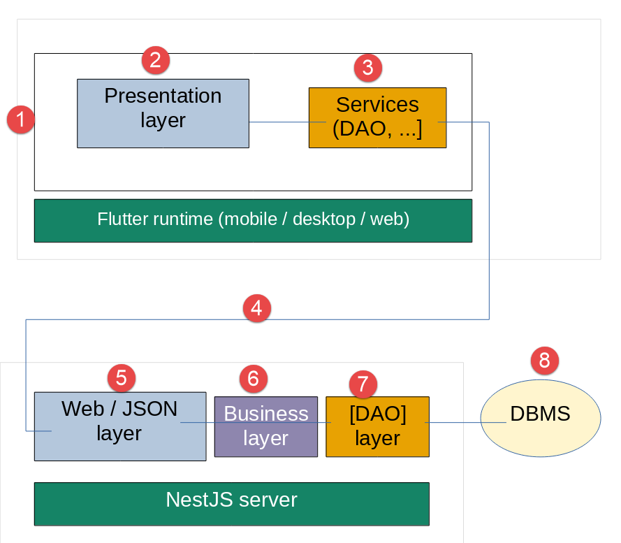
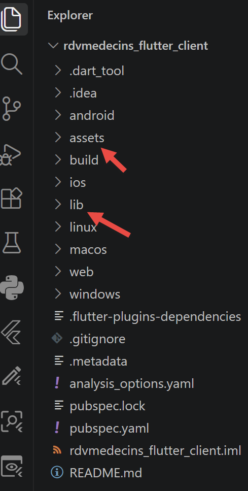
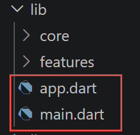
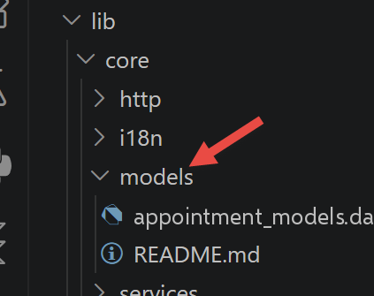
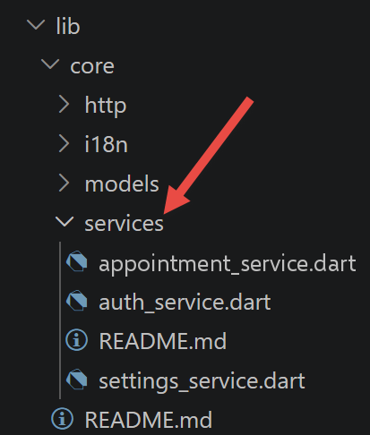
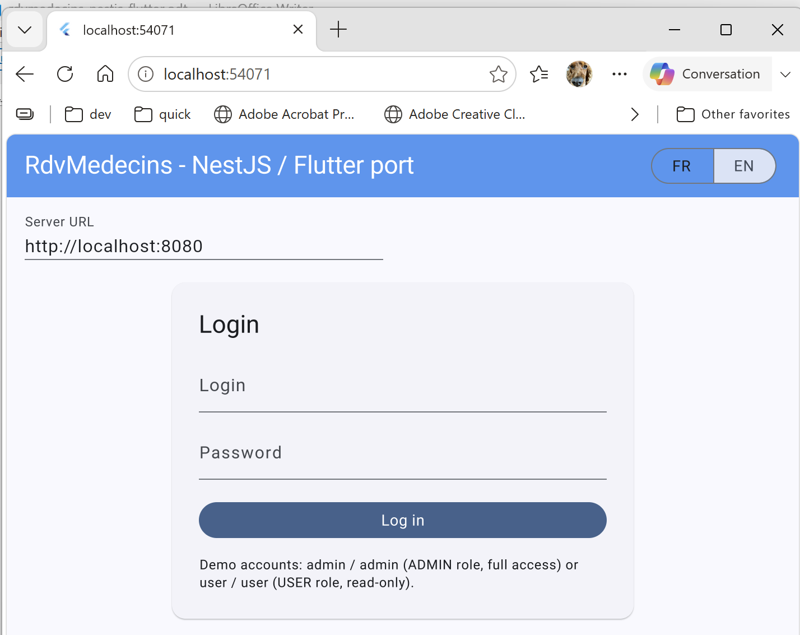

5. Capítulo 4 - O cliente Flutter da aplicação RdvMedecins
5.1. Visão geral da arquitetura

Este cliente se comunica com o servidor [rdvmedecins-nestjs-server] do curso, que permanece estritamente inalterado, pelas mesmas rotas HTTP já documentadas (POST [/login], GET [/getAllDoctors], GET [/getAllClients], GET [/getDoctorScheduleOfDay/:doctorId/:day], POST [/addAppointment], POST [/deleteAppointment]), com o mesmo envelope JSON [{ status, data }] e a mesma autenticação baseada em token [JWT] (cabeçalho [Authorization: Bearer <token>]). Nesta variante, a arquitetura geral ganha um terceiro componente: dependendo do destino de compilação escolhido (veja o Capítulo 5), quem executa o cliente deixa de ser apenas um navegador e passa a ser, potencialmente, um sistema operacional mobile ou desktop que executa diretamente o código [Dart] compilado; o servidor [NestJS], por sua vez, continua processando apenas as mesmas requisições HTTP, seja qual for o destino.
5.2. Estrutura de diretórios do projeto

| rdvmedecins_flutter_client/
├── pubspec.yaml configuração do projeto (dependências, assets)
├── assets/
│ └── i18n/ dicionários de tradução (fr.json, en.json)
└── lib/
├── main.dart ponto de entrada (constrói os serviços, os fornece, inicia a aplicação)
├── app.dart root widget (conductor + authentication guard)
├── core/
│ ├── models/ classes de dados (espelho do JSON trocado com o servidor)
│ ├── services/ SettingsService, AuthService, AppointmentService
│ ├── http/ AuthHttpClient (token JWT + logout em caso de 401)
│ └── i18n/ TranslationsService (francês/inglês)
└── features/ um widget por funcionalidade, incluindo a tela de login
|
Essa estrutura de diretórios espelha, pasta por pasta, a do cliente [Vue.js] deste curso ([core/models], [core/composables] -> [core/services], [core/interceptors] -> [core/http], [features/] inalterada), uma escolha deliberada: a organização de uma aplicação, na maioria dos casos, não é específica de nenhum framework de interface em particular.
5.3. Arquivos de configuração do projeto
5.3.1. pubspec.yaml
| name: rdvmedecins_flutter_client
description: >
Flutter client (mobile, desktop and web from one and the same source code)
for the RdvMedecins application - NestJS / Flutter port of this course.
publish_to: 'none'
version: 1.0.0+1
environment:
sdk: '>=3.4.0 <4.0.0'
flutter: '>=3.24.0'
dependencies:
flutter:
sdk: flutter
# http: o cliente HTTP "de baixo nível" oficial do ecossistema Dart - o
# equivalente exato do fetch() usado no lado Vue.js (auth.interceptor.ts,
# appointment.service.ts). O Flutter não tem fetch() embutido na linguagem: esta
# biblioteca ocupa o seu lugar.
http: ^1.2.2
# provider: a forma mais difundida de expor um estado COMPARTILHADO a toda uma
# árvore de widgets Flutter - exatamente o papel de provide()/inject()
# no lado Vue.js (settings.composable.ts, auth.composable.ts,
# language.composable.ts). Veja o capítulo "Introduction to Flutter" para
# a correspondência detalhada.
provider: ^6.1.2
# shared_preferences: um armazenamento persistente de chave/valor, disponível da
# MESMA forma em mobile, desktop E web - o equivalente multiplataforma do
# localStorage (que, por sua vez, só existe em um navegador).
shared_preferences: ^2.3.2
# intl: formatação de datas (yyyy-MM-dd, veja DoctorDayPicker) - o mesmo
# papel de Date.toISOString().slice(0, 10) no lado Vue.js/TypeScript, mas
# explícito em vez de um simples recorte de string.
intl: ^0.19.0
dev_dependencies:
flutter_test:
sdk: flutter
flutter_lints: ^4.0.0
flutter:
uses-material-design: true
# the translation dictionaries - the equivalent of public/i18n/*.json do lado
# Vue.js, mas EMBUTIDOS no pacote da aplicação em vez de servidos
# por um servidor web (veja o Capítulo "Porting the application" para o motivo
# dessa diferença, que diz respeito justamente aos 3 ambientes de destino).
assets:
- assets/i18n/
|
Vamos comentar esse código:
- linhas 9 e 10: [sdk: '>=3.4.0 <4.0.0'] / [flutter: '>=3.24.0'] — equivalente ao campo [engines] de um [package.json] [Node.js]: o intervalo de versões da linguagem [Dart] e do SDK do [Flutter] exigido por este projeto.
- Linhas 16 a 20, 22 a 27, 29 a 32, 34 a 37: as quatro dependências deste cliente, cada uma anotada no próprio local com seu equivalente no [Vue.js]; veja também a seção “Ferramentas utilizadas” da introdução.
- linha 42: [flutter_lints: ^4.0.0]— o equivalente em [Dart] do [ESLint]: um conjunto de regras de estilo e qualidade verificadas pelo [flutter analyze], que não existia nos clientes web anteriores deste curso, mas foi gerado automaticamente pelo [flutter create].
- Linhas 51 e 52: [assets: - assets/i18n/] — declara EXPLICITAMENTE que todo o conteúdo de [assets/i18n/] deve ser embutido no pacote da aplicação; sem essa declaração, [rootBundle.loadString(...)] (veja [core/i18n/translations_service.dart] adiante) falharia em tempo de execução: um arquivo que existe em disco no momento do [flutter build] não é incluído automaticamente no pacote final, ao contrário da pasta [public/] no caso do [Vite]/[Vue.js], que é servida como está, sem declaração prévia.
5.4. Inicialização da aplicação

5.4.1. lib/main.dart
Portabilidade de [src/main.ts] (cliente [Vue.js]): constrói os serviços deste cliente, disponibiliza-os a toda a árvore de widgets por meio do [provider] e, em seguida, inicia a aplicação.
| // =========================================================================
// main.dart
// -------------------------------------------------------------------------
// Ponto de entrada do cliente Flutter. Equivalente de src/main.ts no lado
// cliente Vue.js deste curso: este arquivo inicia explicitamente a aplicação
// (runApp(...) aqui; createApp(...).mount(...) no lado Vue.js) E
// a configura.
//
// O Vue.js configura sua aplicação com app.provide(key, value), chamado
// diretamente na instância da aplicação - o Flutter/provider usa
// um widget, MultiProvider, colocado na raiz da árvore (veja runApp(...)
// abaixo): cada ChangeNotifierProvider/Provider que ele contém disponibiliza
// uma instância para TODA a subárvore que envolve, exatamente
// como app.provide(...) fazia para todos os componentes descendentes -
// a mesma ideia, expressa como um WIDGET em vez de uma chamada
// de método imperativa, porque TUDO, no Flutter, é um widget (inclusive
// a configuração de um estado compartilhado).
//
// A ORDEM das construções ainda importa, pelas mesmas razões que
// no lado Vue.js: AuthService(settings) precisa que settings já exista
// (para ler apiBaseUrl); AppointmentService precisa de authHttp E de settings.
//
// DIFERENÇA IMPORTANTE em relação ao Vue.js: createAuthStore(settings) e
// createLanguageStore() no lado Vue.js leem o localStorage de forma SÍNCRONA
// durante a construção, antes mesmo da primeira renderização. Seus
// equivalentes no Flutter (AuthService.init(), TranslationsService.init())
// são ASSÍNCRONOS (veja seus respectivos arquivos): o próprio main() deve
// portanto se tornar uma função async e AGUARDAR (await) essas duas
// inicializações ANTES de chamar runApp(...) - caso contrário, a primeira tela
// exibida ignoraria uma sessão ou um idioma possivelmente já armazenados, durante
// o tempo que o shared_preferences leva para responder.
//
// Como os clientes Angular, React e Vue.js deste curso (uma única página,
// sem tabela de rotas), este cliente Flutter usa APENAS a navegação
// mínima fornecida pelo MaterialApp (essencial para showDialog(), veja
// features/booking_dialog/booking_dialog.dart): AppRoot (veja app.dart)
// exibe ou a tela de login, ou o restante da aplicação, conforme
// AuthService.isLoggedIn - um simples if/else de Dart basta; um pacote de
// roteamento (go_router ou outro) não traria nada para uma aplicação
// com uma única tela.
// =========================================================================
import 'package:flutter/material.dart';
import 'package:provider/provider.dart';
import 'app.dart';
import 'core/http/auth_http_client.dart';
import 'core/i18n/translations_service.dart';
import 'core/services/auth_service.dart';
import 'core/services/appointment_service.dart';
import 'core/services/settings_service.dart';
Future<void> main() async {
// WidgetsFlutterBinding.ensureInitialized(): essencial assim que se
// chama uma API do Flutter ANTES de runApp(...) (aqui, shared_preferences e
// rootBundle.loadString(...) em TranslationsService.init()) - sem
// esta linha, essas chamadas falhariam na inicialização. O Vue.js não tem nada
// comparável: o navegador está sempre "pronto" mesmo antes de
// src/main.ts ser executado.
WidgetsFlutterBinding.ensureInitialized();
// 1. SettingsService primeiro: AuthService e AppointmentService precisam dele
// (apiBaseUrl).
final settings = SettingsService();
// 2. AuthService: recebe settings diretamente no construtor, como
// createAuthStore(settingsStore) no lado Vue.js - depois init() restaura uma
// sessão possivelmente armazenada (veja o comentário de cabeçalho
// acima sobre a natureza assíncrona desta etapa).
final auth = AuthService(settings);
await auth.init();
// 3. a camada HTTP autenticada, depois o serviço de negócio - ambos
// construídos AQUI, uma única vez, em vez de dentro de um widget
// (onde seriam reconstruídos a cada renderização): exatamente o mesmo
// princípio de createSettingsStore()/createAuthStore(...), chamados uma única
// vez antes de app.mount(...) no lado Vue.js.
final authHttp = AuthHttpClient(auth);
final api = AppointmentService(authHttp, settings);
// 4. TranslationsService: carrega o dicionário inicial (o
// idioma armazenado, ou o idioma do dispositivo por padrão) - SEM dependência
// de ordem em relação às etapas anteriores (ao contrário de
// createLanguageStore() no lado Vue.js, que precisava esperar
// app.use(i18n): este arquivo reimplementa tudo por conta própria, veja
// core/i18n/translations_service.dart, então não há plugin
// de terceiros a instalar antes de poder usá-lo).
final translations = TranslationsService();
await translations.init();
runApp(
// MultiProvider: agrupa vários providers em um único widget,
// em vez de aninhá-los à mão (Provider(...) > Provider(...)
// > Provider(...) > ...) - uma legibilidade comparável à sequência
// de chamadas "app.provide(SettingsKey, ...); app.provide(AuthKey, ...);
// app.provide(LanguageKey, ...);" no lado Vue.js, apesar da diferença
// de forma (uma lista de widgets em vez de uma sequência de instruções).
MultiProvider(
providers: [
// .value(...) em vez de Provider(create: ...): essas instâncias
// já existem (construídas acima) - .value(...) apenas as disponibiliza
// para a árvore de widgets, sem construir
// novas. O ChangeNotifierProvider, em particular, também se inscreve
// em notifyListeners() e redesenha automaticamente qualquer
// widget que tenha chamado context.watch<...>() sobre este provider (veja
// lib/app.dart) - o papel desempenhado pela natureza "reativa" de um
// reactive(...) no lado Vue.js.
ChangeNotifierProvider.value(value: settings),
ChangeNotifierProvider.value(value: auth),
ChangeNotifierProvider.value(value: translations),
// AppointmentService NÃO é um ChangeNotifier (nada, neste serviço,
// varia no tempo depois de construído): um simples Provider
// basta, ele apenas disponibiliza esta instância, sem
// nenhuma noção de notificação.
Provider.value(value: api),
],
child: const RdvMedecinsApp(),
),
);
}
|
Vamos comentar esse código:
- linha 60: [WidgetsFlutterBinding.ensureInitialized();] — necessária sempre que você chama uma API do [Flutter] ANTES de [runApp(...)] (aqui, [shared_preferences] e [rootBundle.loadString(...)]); sem essa linha, essas chamadas falhariam na inicialização; o [Vue.js] não precisa antecipar nada do tipo, pois o navegador está sempre “pronto” antes mesmo de [src/main.ts] ser executado.
- Linhas 70 e 71: [final auth = AuthService(settings); await auth.init();] — DIFERENÇA IMPORTANTE em relação a [createAuthStore(settingsStore)] do lado do [Vue.js], que lê o [localStorage] DE FORMA SÍNCRONA assim que é construído: [AuthService.init()] é explicitamente [async], e [main()] também precisa ser, para poder AGUARDAR (await) antes de [runApp(...)]; caso contrário, a primeira tela exibida ignoraria uma sessão já armazenada enquanto espera a resposta do [shared_preferences] .
- Linha 89: [await translations.init();] — mesma observação anterior sobre o idioma armazenado; ao contrário de [createLanguageStore()] no [Vue.js], que precisava esperar por [app.use(i18n)], esta etapa não tem dependência sequencial das anteriores: o [TranslationsService] reimplementa tudo por conta própria, sem exigir que nenhum plugin de terceiros seja instalado antes.
- Linhas 98 a 116: [MultiProvider(providers: [...], child: const RdvMedecinsApp())] — o equivalente, na forma de um WIDGET e não de chamadas imperativas, da sequência [app.provide(SettingsKey, ...); app.provide(AuthKey, ...); app.provide(LanguageKey, ...);] do lado do [Vue.js]: cada [ChangeNotifierProvider.value(...)] disponibiliza uma instância já construída a toda a subárvore.
5.4.2. lib/app.dart
Portabilidade de [src/app/App.vue]: o widget RAIZ da aplicação (construído por [lib/main.dart]), o “maestro” que guarda o estado de negócio e responde às ações dos widgets de [lib/features/], e o “guard” de autenticação.
| // =========================================================================
// app.dart
// -------------------------------------------------------------------------
// Port de src/app/App.vue (cliente Vue.js deste curso): o widget
// RAIZ da aplicação (construído por lib/main.dart). Como nas
// três outras variantes deste curso, é ele quem faz o papel de
// "maestro": mantém o estado da aplicação (médicos, clientes,
// agenda exibida, última busca de médico/dia...) e reage às ações
// dos widgets "de negócio" de lib/features/ para chamar o servidor NestJS no
// momento certo, por meio de AppointmentService.
//
// Desde que a autenticação foi adicionada, este widget também faz o papel de
// "guard": enquanto AuthService.isLoggedIn for false, ele só exibe
// LoginPage (veja lib/features/login/); como todas as rotas do servidor são
// protegidas por JwtAuthGuard, seria de qualquer forma inútil (e fonte
// de erros 401) carregar médicos/clientes/agenda antes de estar autenticado.
//
// Duas classes, como nos outros arquivos "stateful" deste cliente:
// RdvMedecinsApp (o MaterialApp - a raiz ABSOLUTA, veja lib/main.dart)
// e AppRoot/_AppRootState (o verdadeiro equivalente de App.vue, com todo o seu estado).
// =========================================================================
import 'package:flutter/material.dart';
import 'package:provider/provider.dart';
import 'core/i18n/translations_service.dart';
import 'core/models/appointment_models.dart';
import 'core/services/auth_service.dart';
import 'core/services/appointment_service.dart';
import 'core/services/settings_service.dart';
import 'features/schedule/schedule_view.dart';
import 'features/booking_dialog/booking_dialog.dart';
import 'features/doctor_day_picker/doctor_day_picker.dart';
import 'features/login/login_page.dart';
// -------------------------------------------------------------------------
// RdvMedecinsApp: a raiz do Flutter em sentido estrito - o MaterialApp fornece
// o tema, a navegação (Navigator, usado por showDialog(), veja
// features/booking_dialog/booking_dialog.dart) e as traduções do sistema
// (rolagem, caixas de diálogo...). É o equivalente, de forma bem
// aproximada, ao que index.html + a montagem app.mount('#app')
// faziam juntos no lado Vue.js (src/main.ts) - exceto que aqui este
// "shell" faz parte do próprio código Dart da aplicação, em vez de
// um arquivo HTML separado.
// -------------------------------------------------------------------------
class RdvMedecinsApp extends StatelessWidget {
const RdvMedecinsApp({super.key});
@override
Widget build(BuildContext context) {
return MaterialApp(
debugShowCheckedModeBanner: false,
// appBarTheme explícito: o tema Material 3 padrão dá
// à AppBar um fundo claro (colorScheme.surface) - para recuperar a
// barra azul com texto branco de "navbar navbar-dark bg-primary" no
// lado Vue.js (veja App.vue), o fundo e o texto são definidos explicitamente aqui,
// em vez de fixar uma cor de texto em cada
// Text() de AppRoot abaixo (veja auth.name, mais adiante) - uma
// única fonte da verdade para o visual da barra.
theme: ThemeData(
colorSchemeSeed: Colors.blue,
useMaterial3: true,
appBarTheme: const AppBarTheme(
backgroundColor: Colors.blue,
foregroundColor: Colors.white,
),
),
home: const AppRoot(),
);
}
}
class AppRoot extends StatefulWidget {
const AppRoot({super.key});
@override
State<AppRoot> createState() => _AppRootState();
}
class _AppRootState extends State<AppRoot> {
// estado da aplicação:
// o equivalente direto dos ref(...) de App.vue, como simples
// campos mutáveis de _AppRootState: setState(...) (veja os métodos
// abaixo) faz as vezes da reatividade automática do Vue.js.
List<Doctor> _doctors = [];
List<Client> _clients = [];
DoctorDaySchedule? _schedule;
String? _error;
// a última busca (médico + dia) é lembrada para poder
// atualizar a agenda após uma marcação ou um cancelamento - mesmo
// papel de lastDoctorId/lastDay no lado Vue.js.
int? _lastDoctorId;
String? _lastDay;
// referência mantida permanentemente para o AuthService, para poder
// cancelar a inscrição corretamente em dispose() (veja abaixo) - veja o
// comentário de initState() abaixo para o motivo desta escolha.
late final AuthService _auth;
@override
void initState() {
super.initState();
// context.read<AuthService>(): quando initState() é executado, o
// widget já está corretamente inserido na árvore (ao contrário do
// construtor, onde context ainda não pode ser usado para
// injeção de dependência) - mas context.watch(...) NÃO é usado
// aqui: um StatefulWidget deve se inscrever em um provider apenas uma vez,
// explicitamente, nunca dentro de initState() com watch()
// (que pressupõe um build context). Então a referência é mantida em
// um campo (_auth) e nós mesmos nos inscrevemos com addListener(...).
_auth = context.read<AuthService>();
_auth.addListener(_onAuthChange);
// equivalente de "watch(() => auth.isLoggedIn, ..., { immediate: true })"
// no lado Vue.js: { immediate: true } dispara o callback
// IMEDIATAMENTE, sem esperar uma primeira mudança - útil se uma sessão
// já estava armazenada (veja AuthService.init(), aguardado por
// lib/main.dart antes de runApp(...)). O Vue.js oferece essa opção
// diretamente; o Flutter não tem mecanismo equivalente embutido em
// addListener(...), então o mesmo efeito é reproduzido À MÃO: uma
// chamada explícita logo após a inscrição, além da inscrição
// em si.
if (_auth.isLoggedIn) {
_loadInitialLists();
}
}
@override
void dispose() {
// cancelar a inscrição é ESSENCIAL aqui: sem isso, _onAuthChange
// continuaria sendo chamado depois que este widget fosse destruído (por
// exemplo durante um hot reload ou uma mudança de rota), e
// causaria uma exceção no primeiro setState(...) em um widget
// desmontado. O Vue.js não tem nada comparável a prever: watch(...) é
// "limpo" automaticamente quando o componente que o criou é destruído.
_auth.removeListener(_onAuthChange);
super.dispose();
}
void _onAuthChange() {
if (_auth.isLoggedIn) {
_loadInitialLists();
}
}
// -----------------------------------------------------------------------
// quando passamos a estar autenticados (login bem-sucedido ou sessão
// restaurada de shared_preferences), as listas de médicos e clientes
// são carregadas de uma vez por todas.
// -----------------------------------------------------------------------
void _loadInitialLists() {
final api = context.read<AppointmentService>();
api.getAllDoctors().then((result) {
if (mounted) setState(() => _doctors = result);
}).catchError((Object err) {
if (mounted) setState(() => _error = err.toString());
});
api.getAllClients().then((result) {
if (mounted) setState(() => _clients = result);
}).catchError((Object err) {
if (mounted) setState(() => _error = err.toString());
});
}
// -----------------------------------------------------------------------
// reage ao botão "Log out": limpa a sessão E o estado de negócio
// exibido - sem isso, um novo usuário que se autenticasse em seguida
// veria brevemente a agenda do anterior.
// -----------------------------------------------------------------------
Future<void> _onLogout() async {
await _auth.logOut();
setState(() {
_doctors = [];
_clients = [];
_schedule = null;
_error = null;
_lastDoctorId = null;
_lastDay = null;
});
}
// -----------------------------------------------------------------------
// reage à chamada de onSearch(...) pelo widget DoctorDayPicker
// -----------------------------------------------------------------------
void _onSearchSchedule(int doctorId, String day) {
setState(() {
_error = null;
_lastDoctorId = doctorId;
_lastDay = day;
});
_loadSchedule();
}
// -----------------------------------------------------------------------
// reage à chamada de onBook(...) pelo widget ScheduleView: AQUI, ao contrário do
// Vue.js (que apenas abria a janela
// memorizando slotBeingBooked), a caixa de diálogo é aberta DIRETAMENTE
// com showDialog (por meio de openBookingDialog(...)) e seu resultado é
// AGUARDADO - veja o cabeçalho de booking_dialog.dart para os detalhes desta
// diferença estrutural.
// -----------------------------------------------------------------------
Future<void> _onBookingRequest(SlotJson slot) async {
final lastDay = _lastDay;
if (lastDay == null) {
return;
}
final clientId = await openBookingDialog(context: context, slot: slot, clients: _clients);
if (clientId == null) {
return; // o usuário fechou a caixa de diálogo sem escolher um paciente
}
try {
await context.read<AppointmentService>().addAppointment(lastDay, clientId, slot.id);
_loadSchedule(); // a agenda é atualizada: o horário agora aparece como reservado
} catch (err) {
if (mounted) setState(() => _error = err.toString());
}
}
// -----------------------------------------------------------------------
// reage à chamada de onCancel(...) pelo widget ScheduleView
// -----------------------------------------------------------------------
Future<void> _onCancelAppointment(AppointmentJson appointment) async {
try {
await context.read<AppointmentService>().deleteAppointment(appointment.id);
_loadSchedule(); // a agenda é atualizada: o horário volta a ficar livre
} catch (err) {
if (mounted) setState(() => _error = err.toString());
}
}
void _loadSchedule() {
final doctorId = _lastDoctorId;
final day = _lastDay;
if (doctorId == null || day == null) {
return;
}
context.read<AppointmentService>().getDoctorScheduleOfDay(doctorId, day).then((result) {
if (mounted) setState(() => _schedule = result);
}).catchError((Object err) {
if (mounted) setState(() => _error = err.toString());
});
}
@override
Widget build(BuildContext context) {
// context.watch<...>() nos TRÊS providers dos quais a exibição depende
// diretamente: cada chamada inscreve este widget nas mudanças futuras
// desse provider - se um deles notificar (notifyListeners()), build(...)
// é chamado novamente de forma automática. É o mecanismo que
// substitui, aqui, a reatividade automática do Vue.js mencionada em
// core/services/settings_service.dart.
final t = context.watch<TranslationsService>().t;
final language = context.watch<TranslationsService>();
final auth = context.watch<AuthService>();
final settings = context.watch<SettingsService>();
// tela estreita (celular em modo retrato): a barra de título é aliviada
// (veja actions: abaixo), por falta de espaço para exibir tudo o que
// cabe com facilidade em uma tela larga.
final narrow = MediaQuery.sizeOf(context).width < 600;
return Scaffold(
appBar: AppBar(
title: Text(t('APP.TITLE')),
actions: [
// seletor FR/EN: SEMPRE visível (inclusive na tela de
// login) - o equivalente do <div class="btn-group"> sempre
// exibido em App.vue.
SegmentedButton<String>(
segments: const [
ButtonSegment(value: 'fr', label: Text('FR')),
ButtonSegment(value: 'en', label: Text('EN')),
],
selected: {language.currentLanguage},
onSelectionChanged: (choice) => language.changeLanguage(choice.first),
showSelectedIcon: false,
),
const SizedBox(width: 12),
// o badge de papel + nome + botão de logout, por sua vez, só
// são exibidos depois de autenticado (auth.isLoggedIn) - mesma
// condição do <template v-if="auth.isLoggedIn"> de App.vue.
if (auth.isLoggedIn) ...[
Chip(label: Text(auth.role?.asString() ?? '')),
const SizedBox(width: 8),
// nenhum estilo de cor fixo aqui: este Text() herda a
// foregroundColor branca definida em appBarTheme (veja RdvMedecinsApp
// acima), exatamente como "navbar-dark" no lado Bootstrap
// colocava todo o seu conteúdo em branco por padrão.
// em tela estreita, o nome fica oculto: o badge de papel e o botão de
// logout bastam, e a barra de título cabe na largura.
if (!narrow) Text(auth.name ?? ''),
IconButton(
tooltip: t('APP.LOGOUT'),
icon: const Icon(Icons.logout),
onPressed: _onLogout,
),
],
const SizedBox(width: 8),
],
),
body: SafeArea(
child: SingleChildScrollView(
padding: const EdgeInsets.all(16),
child: Column(
crossAxisAlignment: CrossAxisAlignment.start,
children: [
// URL do servidor: útil tanto antes quanto depois do login -
// extraída para um pequeno widget privado dedicado, _ServerUrlField
// (veja abaixo), pelas razões explicadas junto à sua
// definição.
ConstrainedBox(
constraints: const BoxConstraints(maxWidth: 320),
child: _ServerUrlField(settings: settings, label: t('APP.SERVER_URL_LABEL')),
),
const SizedBox(height: 16),
if (_error != null) ...[
Container(
width: double.infinity,
padding: const EdgeInsets.all(12),
decoration: BoxDecoration(
color: Theme.of(context).colorScheme.errorContainer,
borderRadius: BorderRadius.circular(4),
),
child: Text(
_error!,
style: TextStyle(color: Theme.of(context).colorScheme.onErrorContainer),
),
),
const SizedBox(height: 16),
],
// não autenticado: nada além da tela de login -
// o equivalente exato de "<Login v-if="!auth.isLoggedIn" />"
// no lado Vue.js.
if (!auth.isLoggedIn)
const LoginPage()
else ...[
// widget 1: escolha do médico e do dia
DoctorDayPicker(doctors: _doctors, onSearch: _onSearchSchedule),
const SizedBox(height: 16),
// widget 2: exibição da agenda - canEdit oculta
// "Book"/"Cancel" para o papel USER
ScheduleView(
schedule: _schedule,
canEdit: auth.isAdmin,
onBook: _onBookingRequest,
onCancel: _onCancelAppointment,
),
],
],
),
),
),
);
}
}
// -------------------------------------------------------------------------
// _ServerUrlField: um pequeno StatefulWidget PRIVADO dedicado ao campo "Server
// URL". No lado Vue.js, este campo cabe em uma única linha, diretamente
// no <template> de App.vue (<input v-model="settings.apiBaseUrl">):
// o próprio v-model cuida, nos bastidores, da sincronização entre o campo
// exibido e settings.apiBaseUrl. O Flutter não tem binding bidirecional
// embutido no TextField (veja já lib/features/login/login_page.dart): ele
// recebe um TextEditingController e, portanto, um dono capaz de criá-lo
// e liberá-lo (initState/dispose) - um TEXTO EDITÁVEL vinculado a um
// provider NÃO pode ser um simples StatelessWidget no Flutter, ao contrário de
// um campo equivalente no Vue.js, que não precisa de um
// "componente" separado para existir.
// -------------------------------------------------------------------------
class _ServerUrlField extends StatefulWidget {
final SettingsService settings;
final String label;
const _ServerUrlField({required this.settings, required this.label});
@override
State<_ServerUrlField> createState() => _ServerUrlFieldState();
}
class _ServerUrlFieldState extends State<_ServerUrlField> {
late final TextEditingController _controller;
@override
void initState() {
super.initState();
_controller = TextEditingController(text: widget.settings.apiBaseUrl);
}
@override
void dispose() {
_controller.dispose();
super.dispose();
}
@override
Widget build(BuildContext context) {
return TextField(
controller: _controller,
decoration: InputDecoration(labelText: widget.label, isDense: true),
// onChanged em vez de onSubmitted: cada tecla digitada é repassada
// imediatamente ao SettingsService, exatamente como
// o v-model faz no lado Vue.js a cada caractere digitado (não apenas
// no envio do formulário).
onChanged: widget.settings.setApiBaseUrl,
);
}
}
|
Vamos comentar esse código:
- linhas 46 a 71: [class RdvMedecinsApp extends StatelessWidget] — o [Flutter] raiz em sentido estrito: [MaterialApp] fornece o tema e a navegação (essencial para [showDialog(...)], veja [booking_dialog.dart] adiante), aproximadamente equivalente ao que [index.html] + [app.mount('#app')] faziam em conjunto do lado do [Vue.js].
- linhas 60 a 66: [appBarTheme: const AppBarTheme(backgroundColor: Colors.blue, foregroundColor: Colors.white)] — reproduz a aparência de ["navbar navbar-dark bg-primary"] ([Bootstrap], veja [App.vue]): um tema padrão [Material 3] daria à [AppBar] um fundo claro, por isso ela precisa ser configurada explicitamente para restaurar o conhecido banner azul com texto branco.
- linhas 96 a 127: [initState()] — reproduz, À MÃO, o equivalente de [watch(() => auth.isLoggedIn, ..., { immediate: true })] do lado do [Vue.js] (veja [App.vue]): o [Flutter] não tem a opção [immediate] embutida em [addListener(...)], então é preciso assinar e DEPOIS verificar explicitamente o estado atual uma vez: dois passos, onde o [Vue.js] exige apenas um.
- Linhas 129–139: [dispose() { _auth.removeListener(_onAuthChange); }] — INDISPENSÁVEL: sem este cancelamento da inscrição, [_onAuthChange] continuaria sendo chamado depois que o widget fosse destruído e causaria uma exceção na primeira chamada a [setState(...)] em um widget desmontado. [Vue.js] não tem nada comparável com que se preocupar, pois [watch(...)] é “limpo” automaticamente quando o componente que o criou é destruído.
- Linhas 203–218: [_onBookingRequest(...)] — AQUI está a diferença estrutural mais visível de todo este cliente: em vez de abrir uma “janela” armazenando um estado booleano (veja [slotBeingBooked] no lado [Vue.js]), este widget aguarda diretamente com [await] o resultado de [openBookingDialog(...)]—veja o comentário completo em [booking_dialog.dart], mais adiante neste capítulo.
- Linhas 253–256: quatro [context.watch<...>()] no início de [build(...)]—este widget se redesenha automaticamente assim que qualquer um desses quatro serviços (QUALQUER um deles) notifica uma mudança ([notifyListeners()]), exatamente o papel desempenhado pela reatividade automática de [Vue.js] para [auth], [settings], e [language] em [App.vue].
- Linhas 260 e 291: [MediaQuery.sizeOf(context).width < 600] — a largura da tela (ou da janela) é usada para deixar a barra de título mais leve em um celular no modo retrato: o nome do usuário fica oculto ([if (!narrow) Text(...)], um simples [if] Dart no meio de uma lista de widgets), enquanto o selo do papel e o botão de logout permanecem visíveis. Na linha 276, [showSelectedIcon: false] remove a marca de seleção que o [SegmentedButton] adiciona à opção selecionada e que alargava desnecessariamente o seletor [FR]/[EN]. Sem esses dois ajustes, os [actions:] elementos da [AppBar] excedem a largura de um celular na orientação retrato.
- Linhas 359–409: [class _ServerUrlField] — um pequeno [StatefulWidget] PRIVADO dedicado ao campo “URL do servidor”. Como em [Vue.js], este campo cabia em uma única linha ([<input v-model="settings.apiBaseUrl">]): [Flutter] não tem um vínculo bidirecional integrado ao [TextField], portanto é necessário um [TextEditingController], junto com um proprietário capaz de criá-lo e liberá-lo—um texto editável vinculado a um provider não pode ser simplesmente um [StatelessWidget] em [Flutter].
5.5. A camada core/models

5.5.1. lib/core/models/appointment_models.dart
Port de [core/models/appointment.models.ts], copiado literalmente dos clientes [Angular] e [React]: as classes que descrevem o formato dos dados JSON trocados com o servidor, sem dependências de [Flutter]—o [Dart] “puro”.
| // =========================================================================
// core/models/appointment_models.dart
// -------------------------------------------------------------------------
// Port de core/models/appointment.models.ts (cliente Vue.js deste curso), ele mesmo
// copiado sem alterações dos clientes Angular e React: as classes Dart que
// descrevem a forma dos dados JSON recebidos do servidor NestJS. Como suas
// equivalentes em TypeScript, essas classes não dependem de nenhum framework de UI
// (nenhum import do Flutter aqui) - é Dart "puro", assim como
// appointment.models.ts era TypeScript "puro".
//
// DIFERENÇA ESTRUTURAL em relação ao TypeScript: uma "interface" TypeScript é
// uma mera descrição de uma FORMA, verificada apenas em tempo de compilação -
// em tempo de execução, um objeto JSON decodificado (JSON.parse) é usado COMO ESTÁ,
// sem conversão, e o TypeScript "confia" no desenvolvedor (veja o
// "as ServerResponse<T>" de appointment.service.ts). O Dart não tem essa noção de
// tipagem estrutural implícita: jsonDecode(...) sempre retorna tipos
// dynamic (Map<String, dynamic>, List<dynamic>...), que devem ser
// convertidos explicitamente em instâncias de classes Dart por meio de um
// construtor fromJson(...) - presente em CADA uma das classes abaixo. É mais
// verboso de escrever uma vez, mas a conversão é verificada em tempo de execução
// (uma chave ausente ou de tipo errado lança imediatamente uma exceção
// explícita), enquanto uma tipagem TypeScript errada pode passar despercebida.
// =========================================================================
// -------------------------------------------------------------------------
// envelope comum a todas as respostas do servidor (veja ServerResponse<T> no lado
// NestJS, e a interface ServerResponse<T> do cliente Vue.js).
//
// O Dart também generaliza com colchetes angulares (<T>), exatamente como o
// TypeScript - a grande diferença é que aqui um mero "as T" não
// basta para converter o campo [data]: a função que sabe construir
// um T a partir do JSON bruto deve ser fornecida (o parâmetro [parseData]
// abaixo), pois o Dart não conhece T em tempo de execução
// (o apagamento de tipos impede escrever "T.fromJson(...)"
// diretamente).
// -------------------------------------------------------------------------
class ServerResponse<T> {
final int status; // 0 = sucesso, qualquer outro valor = falha (veja ResponseStatus no lado do servidor)
final T? data;
ServerResponse({required this.status, required this.data});
factory ServerResponse.fromJson(
Map<String, dynamic> json,
T Function(dynamic rawData) parseData,
) {
final rawData = json['data'];
return ServerResponse<T>(
status: json['status'] as int,
data: rawData == null ? null : parseData(rawData),
);
}
}
class Doctor {
final int id;
final String title;
final String lastName;
final String firstName;
Doctor({required this.id, required this.title, required this.lastName, required this.firstName});
factory Doctor.fromJson(Map<String, dynamic> json) => Doctor(
id: json['id'] as int,
title: json['title'] as String,
lastName: json['lastName'] as String,
firstName: json['firstName'] as String,
);
}
// [Client] aqui significa um PACIENTE do consultório médico (vocabulário do
// domínio de negócio, herdado do documento original) - não confundir com
// "cliente HTTP", nem com este próprio cliente Flutter!
class Client {
final int id;
final String title;
final String lastName;
final String firstName;
Client({required this.id, required this.title, required this.lastName, required this.firstName});
factory Client.fromJson(Map<String, dynamic> json) => Client(
id: json['id'] as int,
title: json['title'] as String,
lastName: json['lastName'] as String,
firstName: json['firstName'] as String,
);
}
// forma "leve" de um horário, como retornada pelo servidor
// (veja getMapForSlot no lado NestJS): apenas os campos úteis para exibição.
class SlotJson {
final int id;
final int startHour;
final int startMinute;
final int endHour;
final int endMinute;
SlotJson({
required this.id,
required this.startHour,
required this.startMinute,
required this.endHour,
required this.endMinute,
});
factory SlotJson.fromJson(Map<String, dynamic> json) => SlotJson(
id: json['id'] as int,
startHour: json['startHour'] as int,
startMinute: json['startMinute'] as int,
endHour: json['endHour'] as int,
endMinute: json['endMinute'] as int,
);
}
// forma "leve" de uma consulta (veja getMapForAppointment no lado NestJS)
class AppointmentJson {
final int id;
final String day; // formato "yyyy-MM-dd"
final Client? client;
final SlotJson? slot;
AppointmentJson({required this.id, required this.day, required this.client, required this.slot});
factory AppointmentJson.fromJson(Map<String, dynamic> json) => AppointmentJson(
id: json['id'] as int,
day: json['day'] as String,
client: json['client'] == null ? null : Client.fromJson(json['client'] as Map<String, dynamic>),
slot: json['slot'] == null ? null : SlotJson.fromJson(json['slot'] as Map<String, dynamic>),
);
}
// um horário da agenda de um médico, livre (appointment == null) ou reservado
class DoctorDaySlot {
final SlotJson slot;
final AppointmentJson? appointment;
DoctorDaySlot({required this.slot, required this.appointment});
factory DoctorDaySlot.fromJson(Map<String, dynamic> json) => DoctorDaySlot(
slot: SlotJson.fromJson(json['slot'] as Map<String, dynamic>),
appointment: json['appointment'] == null ? null : AppointmentJson.fromJson(json['appointment'] as Map<String, dynamic>),
);
}
// a agenda completa de um médico para um determinado dia (veja GET /getDoctorScheduleOfDay/:doctorId/:day)
class DoctorDaySchedule {
final Doctor doctor;
final String day;
final List<DoctorDaySlot> slots;
DoctorDaySchedule({required this.doctor, required this.day, required this.slots});
factory DoctorDaySchedule.fromJson(Map<String, dynamic> json) => DoctorDaySchedule(
doctor: Doctor.fromJson(json['doctor'] as Map<String, dynamic>),
day: json['day'] as String,
slots: (json['slots'] as List<dynamic>)
.map((e) => DoctorDaySlot.fromJson(e as Map<String, dynamic>))
.toList(),
);
}
// -------------------------------------------------------------------------
// autenticação (veja servidor: src/auth/, em particular login-result.model.ts)
// -------------------------------------------------------------------------
// os únicos dois papéis tratados pela aplicação - cópia exata do tipo
// [Role] do servidor (src/entities/user.entity.ts). Onde o TypeScript se
// contenta com uma união de strings ('ADMIN' | 'USER'), o Dart tem uma
// noção real de enumeração (enum): mais segura (impossível criar por
// engano um Role diferente desses dois valores), ao custo de uma pequena
// conversão explícita de ida e volta com a string JSON ("ADMIN"/"USER") por meio de
// fromString(...)/asString() abaixo - um "type Role =
// 'ADMIN' | 'USER'" do TypeScript não precisa de nenhuma conversão, uma string JSON JÁ
// é, para ele, um valor válido do tipo.
enum Role {
admin,
user;
static Role fromString(String value) {
switch (value) {
case 'ADMIN':
return Role.admin;
case 'USER':
return Role.user;
default:
throw ArgumentError('Unknown role: $value');
}
}
String asString() => this == Role.admin ? 'ADMIN' : 'USER';
}
// formato dos dados retornados por POST /login (no envelope usual ServerResponse<T>)
class LoginResult {
final String accessToken;
final String login;
final String name;
final Role role;
LoginResult({required this.accessToken, required this.login, required this.name, required this.role});
factory LoginResult.fromJson(Map<String, dynamic> json) => LoginResult(
accessToken: json['accessToken'] as String,
login: json['login'] as String,
name: json['name'] as String,
role: Role.fromString(json['role'] as String),
);
}
|
Vamos comentar este código:
- Linhas 11–22: O comentário de cabeçalho detalha a principal diferença estrutural deste arquivo—uma [interface] [TypeScript] só é verificada em tempo de COMPILAÇÃO; [Dart] MANTÉM seus tipos em tempo de execução, daí um construtor [fromJson(...)] explícito em cada classe (ausente em [appointment.models.ts]).
- Linhas 37–53: [class ServerResponse<T>] e sua factory [fromJson(json, parseData)]—recebe uma FUNÇÃO ([parseData]) em vez de se apoiar em um simples [as ServerResponse<T>] como no lado [TypeScript] (veja [appointment.service.ts]): [Dart] não conhece [T] em tempo de execução (apagamento de tipo), portanto não pode escrever [T.fromJson(...)] por conta própria.
- Linhas 71–73: O comentário observa que [Client] designa um PACIENTE do consultório médico (vocabulário do domínio de negócio)—não deve ser confundido com “cliente HTTP”, nem com este próprio cliente [Flutter], uma ambiguidade já apontada nas três variantes web anteriores.
- linhas 176–192: [enum Role { admin, user; ... }] — substitui a união de strings [TypeScript] [type Role = 'ADMIN' | 'USER'] por uma enumeração [Dart] REAL, com uma conversão de ida e volta explícita para a string JSON ([fromString]/[asString])—o que é mais seguro (é impossível gerar um [Role] inválido), ao custo de uma conversão que uma união de strings não precisa realizar.
5.6. A camada core/services

5.6.1. lib/core/services/settings_service.dart
Port de [core/composables/settings.composable.ts]: mantém a URL do servidor [NestJS] na memória.
| // =========================================================================
// core/services/settings_service.dart
// -------------------------------------------------------------------------
// Port de core/composables/settings.composable.ts (cliente Vue.js deste
// curso): um minúsculo "store" que mantém em memória a URL do servidor
// NestJS.
//
// O Vue.js expõe este estado compartilhado por meio do par [provide]/[inject]: um
// objeto [reactive(...)] criado uma única vez, depois lido/modificado no próprio lugar
// por qualquer componente descendente. O Flutter não tem nem [reactive] nem
// [provide]/[inject]: o equivalente padrão do ecossistema (e o usado
// neste curso) é um ChangeNotifier - uma classe Dart comum
// que, além de seus campos, sabe NOTIFICAR seus ouvintes
// cada vez que uma mudança deve causar uma nova exibição, por meio
// da chamada explícita notifyListeners().
//
// A diferença essencial em relação ao Vue.js: [reactive(...)] envolve o objeto
// em um proxy JavaScript que detecta AUTOMATICAMENTE cada escrita de
// propriedade (store.apiBaseUrl = ... redesenha sozinho os componentes que
// leem apiBaseUrl). Um ChangeNotifier do Dart, por sua vez, não detecta NADA
// por conta própria: cabe ao desenvolvedor chamar notifyListeners() após cada
// modificação - um pouco mais de disciplina manual, em troca de um
// mecanismo muito mais simples (sem proxy, sem "mágica") de
// entender e depurar.
//
// É o pacote [provider] (veja pubspec.yaml e lib/main.dart) que então
// faz, em torno deste ChangeNotifier, o papel de app.provide(...) no lado
// Vue.js: ele disponibiliza esta instância única para toda a subárvore de
// widgets, por meio de context.watch<SettingsService>() (para "ler e
// se reinscrever nas mudanças", veja lib/app.dart) ou context.read<...>()
// (para "ler uma vez, sem se reinscrever").
// =========================================================================
import 'package:flutter/foundation.dart';
class SettingsService extends ChangeNotifier {
String _apiBaseUrl = 'http://localhost:8080';
String get apiBaseUrl => _apiBaseUrl;
// equivalente de "setApiBaseUrl(url: string)" no lado Vue.js - ao contrário de
// store.apiBaseUrl = url (uma mera atribuição, suficiente graças ao proxy
// reativo), os ouvintes precisam aqui ser notificados explicitamente depois de
// alterar o campo privado.
void setApiBaseUrl(String url) {
if (url == _apiBaseUrl) {
return; // evita uma nova renderização inútil se o valor não mudou de fato
}
_apiBaseUrl = url;
notifyListeners();
}
}
|
Vamos comentar este código:
- linhas 36–39: [class SettingsService extends ChangeNotifier] com um campo PRIVADO ([_apiBaseUrl]) e um acessor público ([get apiBaseUrl]) — um [ChangeNotifier] é uma classe [Dart] COMUM, sem um proxy como [reactive(...)] no lado [Vue.js]: nada detecta automaticamente a leitura ou a escrita de uma propriedade.
- Linhas 45–51: [setApiBaseUrl(url)] chama explicitamente [notifyListeners()] DEPOIS de atualizar o campo — a etapa manual que [store.apiBaseUrl = url] não precisava executar no lado [Vue.js], já que o proxy reativo cuida disso sozinho.
5.6.2. lib/core/services/auth_service.dart
Port de [core/composables/auth.composable.ts]: gerencia a conexão (POST [/login]), mantém o token [JWT] e garante que ele sobreviva a uma reinicialização por meio de [shared_preferences].
| // =========================================================================
// core/services/auth_service.dart
// -------------------------------------------------------------------------
// Port de core/composables/auth.composable.ts (cliente Vue.js deste curso): trata
// o login do usuário, chama POST /login, guarda
// o token JWT recebido (e a identidade/papel que o acompanham) e o faz
// sobreviver a uma reinicialização da aplicação graças ao shared_preferences -
// o equivalente multiplataforma do localStorage (veja abaixo).
//
// Como no lado Vue.js, este é o único outro lugar da aplicação, junto com
// core/services/appointment_service.dart, que fala HTTP com o servidor - uma
// exceção assumida à regra "um único lugar que fala HTTP", que
// reflete, no lado cliente, a separação já feita no lado servidor entre
// RdvMedecinsController (negócio) e AuthController (autenticação).
//
// DIFERENÇA IMPORTANTE em relação ao Vue.js: readStoredSession() (no lado Vue.js)
// é SÍNCRONA - localStorage.getItem(...) retorna seu valor
// imediatamente, antes mesmo da primeira renderização da aplicação. O shared_
// preferences, por sua vez, é SEMPRE assíncrono (SharedPreferences.getInstance()
// retorna um Future), mesmo nas plataformas em que o armazenamento subjacente
// é na verdade um arquivo local lido quase instantaneamente: a API Dart não
// distingue esses casos, por consistência entre TODAS as plataformas (na
// web, essa mesma chamada se apoia em window.localStorage, mas a API Dart
// continua assíncrona para permanecer idêntica às outras plataformas). Consequência
// concreta: não se pode mais, como no lado Vue.js, ler a sessão já
// armazenada ANTES de a árvore de widgets ser montada - é necessário um [init()]
// explicitamente assíncrono, chamado (e AGUARDADO com await) em
// lib/main.dart antes de runApp(...), para evitar que a tela de login
// "pisque" por uma fração de segundo antes de a sessão ser restaurada.
// =========================================================================
import 'dart:convert';
import 'package:flutter/foundation.dart';
import 'package:http/http.dart' as http;
import 'package:shared_preferences/shared_preferences.dart';
import '../models/appointment_models.dart';
import 'settings_service.dart';
const String _storageKey = 'rdvmedecins.session';
class AuthService extends ChangeNotifier {
// recebido no construtor em vez de obtido por injeção do Flutter: nesta
// etapa (veja lib/main.dart), nenhum widget existe ainda, então nada
// como context.read<SettingsService>() seria possível - exatamente
// a mesma razão documentada em createAuthStore(settings) no lado
// Vue.js (src/main.ts), que também recebe settingsStore como parâmetro de função
// em vez de usar inject().
final SettingsService settings;
AuthService(this.settings);
bool isLoggedIn = false;
String? login;
String? name;
Role? role;
String? accessToken;
bool get isAdmin => role == Role.admin;
// -----------------------------------------------------------------------
// deve ser chamado UMA ÚNICA VEZ, em lib/main.dart, ANTES de runApp(...): relê
// uma sessão possivelmente já armazenada durante uma execução anterior da
// aplicação - equivalente de readStoredSession() no lado Vue.js, mas
// explicitamente assíncrono (veja o cabeçalho deste arquivo) em vez de chamado
// dentro do próprio construtor do store.
// -----------------------------------------------------------------------
Future<void> init() async {
try {
final prefs = await SharedPreferences.getInstance();
final raw = prefs.getString(_storageKey);
if (raw == null) {
return; // nenhuma sessão armazenada: continuamos "não autenticados", valores padrão acima
}
final session = jsonDecode(raw) as Map<String, dynamic>;
_applyLocalSession(
accessToken: session['accessToken'] as String,
login: session['login'] as String,
name: session['name'] as String,
role: Role.fromString(session['role'] as String),
);
} catch (_) {
// o shared_preferences pode estar indisponível ou conter um valor
// corrompido - nesse caso, como no lado Vue.js (try/catch de
// readStoredSession()), consideramos simplesmente que não há
// sessão, em vez de derrubar a inicialização da aplicação.
}
// nenhum notifyListeners() aqui: init() é aguardado antes de
// runApp(...) em lib/main.dart, então nenhum widget está ouvindo este
// ChangeNotifier ainda quando este método é executado - notificar
// seria inútil (e até lançaria uma exceção, pois um ChangeNotifier do Flutter
// proíbe notifyListeners() antes de haver ao menos um
// ouvinte em algumas configurações de debug).
}
// -----------------------------------------------------------------------
// equivalente de: POST /login corpo JSON { login, password }
// -----------------------------------------------------------------------
Future<LoginResult> logIn(String login, String password) async {
final httpResponse = await http.post(
Uri.parse('${settings.apiBaseUrl}/login'),
headers: {'Content-Type': 'application/json'},
body: jsonEncode({'login': login, 'password': password}),
);
final envelope = ServerResponse<LoginResult>.fromJson(
jsonDecode(httpResponse.body) as Map<String, dynamic>,
(data) => LoginResult.fromJson(data as Map<String, dynamic>),
);
if (envelope.status != 0 || envelope.data == null) {
throw Exception('Login failed');
}
final result = envelope.data!;
await _applySessionAndPersist(result);
return result;
}
// -----------------------------------------------------------------------
// logout: puramente local (nenhuma chamada ao servidor - um token JWT não é
// "revogado" no lado servidor neste port, ele expira sozinho após
// JWT_EXPIRES_IN, veja o .env do servidor). Chamado tanto por um clique em
// "Log out" (veja lib/app.dart) quanto por core/http/auth_http_client.dart
// quando uma requisição protegida recebe um 401.
// -----------------------------------------------------------------------
Future<void> logOut() async {
login = null;
name = null;
role = null;
accessToken = null;
isLoggedIn = false;
notifyListeners();
try {
final prefs = await SharedPreferences.getInstance();
await prefs.remove(_storageKey);
} catch (_) {
// aqui também, uma falha ao limpar o armazenamento não deve impedir o
// logout no lado da aplicação, já efetivo acima.
}
}
// atualiza os campos reativos SEM mexer no armazenamento - usado por
// init() (que acabou de LER o armazenamento, sem necessidade de reescrevê-lo).
void _applyLocalSession({
required String accessToken,
required String login,
required String name,
required Role role,
}) {
this.accessToken = accessToken;
this.login = login;
this.name = name;
this.role = role;
isLoggedIn = true;
}
// atualiza os campos reativos E persiste a sessão - usado por
// logIn() acima. Agrupa o que applySession(...) fazia
// em um único bloco no lado Vue.js (estado reativo + localStorage escritos
// juntos); aqui, as duas operações são separadas porque a escrita
// é assíncrona (await prefs.setString(...)), enquanto a atualização
// dos campos deve acontecer IMEDIATAMENTE e de forma síncrona
// (notifyListeners() deve seguir a atribuição dos campos sem esperar
// a E/S em disco) - inverter a ordem atrasaria inutilmente a atualização
// da interface.
Future<void> _applySessionAndPersist(LoginResult result) async {
_applyLocalSession(
accessToken: result.accessToken,
login: result.login,
name: result.name,
role: result.role,
);
notifyListeners();
try {
final prefs = await SharedPreferences.getInstance();
await prefs.setString(
_storageKey,
jsonEncode({
'accessToken': result.accessToken,
'login': result.login,
'name': result.name,
'role': result.role.asString(),
}),
);
} catch (_) {
// a sessão continua válida EM MEMÓRIA durante esta execução da
// aplicação mesmo que a persistência falhe (cota excedida,
// armazenamento somente leitura...) - apenas uma reinicialização futura
// da aplicação sofreria com isso (o usuário teria de se autenticar novamente).
}
}
}
|
Vamos comentar este código:
- linhas 16–29: O comentário de cabeçalho detalha a diferença mais significativa deste arquivo—[readStoredSession()] no lado [Vue.js] é SÍNCRONO; [shared_preferences] é SEMPRE assíncrono, qualquer que seja a plataforma, daí um [async] [init()] explícito, que é aguardado por [lib/main.dart] ANTES de [runApp(...)].
- linhas 69–95: [Future<void> init() async { ... }] — lê qualquer sessão em cache, protegida por um [try/catch] — mesma precaução adotada com o [try/catch] de [readStoredSession()] no lado [Vue.js] (armazenamento indisponível ou valor corrompido).
- linhas 100–116: [logIn(login, password)] — chama POST [/login] com o pacote [http] (o equivalente de [fetch]), lança uma exceção [Dart] padrão ([throw Exception(...)]) em caso de falha—que é interceptada mais adiante por um [try/catch] [Dart], assim como o [throw new Error(...)] de [auth.composable.ts] era interceptado por um [.catch(...)] [JavaScript].
- linhas 165–190: [_applySessionAndPersist(...)] — atualiza os campos E chama [notifyListeners()] ANTES de gravar em [shared_preferences]: a ordem é deliberada—a interface deve se atualizar IMEDIATAMENTE, sem esperar uma gravação assíncrona em disco, enquanto [applySession(...)] no lado [Vue.js] executava as duas operações em uma única instrução síncrona.
5.6.3. lib/core/services/appointment_service.dart
Port de [core/services/appointment.service.ts]: as cinco chamadas de lógica de negócio ao servidor, construídas sobre [core/http/auth_http_client.dart] (abaixo) em vez de diretamente sobre o pacote [http].
| // =========================================================================
// core/services/appointment_service.dart
// -------------------------------------------------------------------------
// Port de core/services/appointment.service.ts (cliente Vue.js deste curso): a
// camada [Services] do cliente Flutter - o ÚNICO lugar da aplicação
// (junto com core/services/auth_service.dart para o próprio login) que
// fala HTTP com o servidor NestJS.
//
// O Vue.js expõe este serviço como um COMPOSABLE (useAppointmentService()), ele mesmo
// construído sobre dois outros composables (useAuthFetch(), useSettings()).
// Como o Flutter/Dart não tem nem composables nem injeção de dependência embutidos
// na linguagem, este arquivo volta a ser uma CLASSE comum, construída uma única
// vez em lib/main.dart com suas duas dependências passadas ao
// construtor - exatamente o mesmo princípio de core/http/auth_http_client.dart,
// e a forma mais direta de portar "um conjunto de funções que
// dependem de outra coisa" quando a linguagem de destino não oferece composables.
// =========================================================================
import 'dart:convert';
import 'package:http/http.dart' as http;
import '../http/auth_http_client.dart';
import '../models/appointment_models.dart';
import 'settings_service.dart';
class AppointmentService {
final AuthHttpClient authHttp;
final SettingsService settings;
AppointmentService(this.authHttp, this.settings);
// -----------------------------------------------------------------------
// função privada comum: todas as respostas do servidor têm a forma
// { status, data } (veja core/models/appointment_models.dart). A regra
// "se status != 0, é um erro" é centralizada AQUI, uma única vez, em vez de
// repetida em cada um dos métodos abaixo - exatamente o
// papel de extract<T>(...) no lado Vue.js.
//
// [parseData] é o mesmo tipo de parâmetro que o já encontrado em
// ServerResponse.fromJson(...) (veja appointment_models.dart): a função que sabe como
// reconstruir um T a partir do JSON bruto do campo [data], já que o Dart
// não consegue fazer isso sozinho (não há "T.fromJson(...)" genérico).
// -----------------------------------------------------------------------
T _extract<T>(http.Response httpResponse, T Function(dynamic rawData) parseData) {
final envelope = ServerResponse<T>.fromJson(
jsonDecode(httpResponse.body) as Map<String, dynamic>,
parseData,
);
if (envelope.status != 0) {
// o erro "de negócio" do servidor é transformado em uma exceção
// Dart clássica, que os widgets chamadores podem capturar com um
// simples try/catch (veja lib/app.dart) - exatamente como o
// "throw new Error(...)" de appointment.service.ts, capturado pelo
// .catch(...) de src/app/App.vue.
throw Exception('The server responded with error status ${envelope.status}');
}
return envelope.data as T;
}
// -----------------------------------------------------------------------
// equivalente de: GET /getAllDoctors
// -----------------------------------------------------------------------
Future<List<Doctor>> getAllDoctors() async {
final httpResponse = await authHttp.get(Uri.parse('${settings.apiBaseUrl}/getAllDoctors'));
return _extract<List<Doctor>>(
httpResponse,
(data) => (data as List<dynamic>).map((e) => Doctor.fromJson(e as Map<String, dynamic>)).toList(),
);
}
// -----------------------------------------------------------------------
// equivalente de: GET /getAllClients
// -----------------------------------------------------------------------
Future<List<Client>> getAllClients() async {
final httpResponse = await authHttp.get(Uri.parse('${settings.apiBaseUrl}/getAllClients'));
return _extract<List<Client>>(
httpResponse,
(data) => (data as List<dynamic>).map((e) => Client.fromJson(e as Map<String, dynamic>)).toList(),
);
}
// -----------------------------------------------------------------------
// equivalente de: GET /getDoctorScheduleOfDay/{doctorId}/{day}
// -----------------------------------------------------------------------
Future<DoctorDaySchedule> getDoctorScheduleOfDay(int doctorId, String day) async {
final httpResponse = await authHttp.get(
Uri.parse('${settings.apiBaseUrl}/getDoctorScheduleOfDay/$doctorId/$day'),
);
return _extract<DoctorDaySchedule>(
httpResponse,
(data) => DoctorDaySchedule.fromJson(data as Map<String, dynamic>),
);
}
// -----------------------------------------------------------------------
// equivalente de: POST /addAppointment corpo JSON { day, clientId, slotId }
// -----------------------------------------------------------------------
Future<AppointmentJson> addAppointment(String day, int clientId, int slotId) async {
final httpResponse = await authHttp.post(
Uri.parse('${settings.apiBaseUrl}/addAppointment'),
body: jsonEncode({'day': day, 'clientId': clientId, 'slotId': slotId}),
);
return _extract<AppointmentJson>(httpResponse, (data) => AppointmentJson.fromJson(data as Map<String, dynamic>));
}
// -----------------------------------------------------------------------
// equivalente de: POST /deleteAppointment corpo JSON { appointmentId }
// -----------------------------------------------------------------------
Future<void> deleteAppointment(int appointmentId) async {
final httpResponse = await authHttp.post(
Uri.parse('${settings.apiBaseUrl}/deleteAppointment'),
body: jsonEncode({'appointmentId': appointmentId}),
);
_extract<Object?>(httpResponse, (data) => data);
}
}
|
Vamos comentar este código:
- linhas 27–31: [class AppointmentService { final AuthHttpClient authHttp; final SettingsService settings; AppointmentService(this.authHttp, this.settings); }] — volta a ser uma CLASSE COMUM, construída uma única vez em [lib/main.dart] com suas dependências passadas ao construtor, enquanto [Vue.js] usava um COMPOSABLE, [useAppointmentService()], que por sua vez era construído a partir de outros dois composables.
- Linhas 45–59: [T _extract<T>(httpResponse, parseData)]—centraliza, uma única vez, a regra “se [status != 0], é um erro”, exatamente o papel de [extract<T>(...)] no lado [Vue.js]—o parâmetro [parseData] é o mesmo tipo de função já encontrado em [ServerResponse.fromJson(...)].
- Linhas 99–105: [addAppointment(day, clientId, slotId)] — [jsonEncode({...})] constrói o corpo JSON da requisição POST, o equivalente em [Dart] de [JSON.stringify({...})] no lado [Vue.js].
- Linhas 110–116: [Future<void> deleteAppointment(int appointmentId) async { ... }] — chama [_extract<Object?>(...)] sem usar seu resultado: o servidor retorna [ServerResponse.ok(null)] para esta rota, portanto não há nada mais específico a indicar—a mesma escolha de [extract<null>(httpResponse)] no lado [Vue.js].
5.7. A camada core/http

5.7.1. lib/core/http/auth_http_client.dart
Port de [core/interceptors/auth.interceptor.ts]: adiciona o token [JWT] a cada requisição protegida e desconecta o usuário ao receber uma resposta 401.
| // =========================================================================
// core/http/auth_http_client.dart
// -------------------------------------------------------------------------
// Port de core/interceptors/auth.interceptor.ts (cliente Vue.js deste
// curso). Este arquivo faz duas coisas, exatamente como seu
// equivalente Vue.js (ele mesmo um port dos clientes Angular e React):
// 1. adiciona o cabeçalho "Authorization: Bearer <token>" a cada requisição, se
// o usuário estiver autenticado (veja AuthService.accessToken);
// 2. se o servidor responder 401 (token ausente, inválido ou expirado),
// desconecta o usuário de forma limpa no lado cliente.
//
// [fetch] (usado no lado Vue.js e React) e o [HttpClient] do Angular não
// têm equivalente DIRETO em Dart: o pacote [http] (veja pubspec.yaml)
// fornece funções livres (http.get(...), http.post(...)) em vez de
// um objeto a interceptar globalmente. O port permanece, no entanto, fiel em
// ESPÍRITO a useAuthFetch(): em vez de uma função composable que retorna
// um "fetch aprimorado", escreve-se aqui uma CLASSE REAL, [AuthHttpClient],
// cujos métodos get(...)/post(...) fazem exatamente o mesmo papel -
// qualquer código que queira falar com o servidor (aqui, apenas
// core/services/appointment_service.dart) chama ESSES métodos em vez do
// pacote http diretamente.
//
// Escrever uma classe em vez de uma função composable é uma escolha natural
// em Dart/Flutter: ao contrário de um <script setup> do Vue.js (que
// é executado uma única vez por instância de componente, veja o comentário de
// auth.interceptor.ts), um ChangeNotifier ou uma classe de serviço Dart
// não tem "corpo executado a cada renderização" com que se preocupar -
// portanto nenhum equivalente de useCallback() é necessário aqui também,
// mas por um motivo diferente: simplesmente não existe
// função "recriada a cada renderização" para começar, já que a classe é
// construída uma única vez por lib/main.dart (veja abaixo).
// =========================================================================
import 'dart:async' show unawaited;
import 'package:http/http.dart' as http;
import '../services/auth_service.dart';
class AuthHttpClient {
final AuthService auth;
final http.Client _client = http.Client();
AuthHttpClient(this.auth);
Future<http.Response> get(Uri url) => _send(() => _client.get(url, headers: _headers()));
Future<http.Response> post(Uri url, {required Object body}) => _send(
() => _client.post(
url,
headers: {..._headers(), 'Content-Type': 'application/json'},
body: body,
),
);
// constrói os cabeçalhos comuns a toda requisição protegida - o equivalente
// de "new Headers(options.headers); if (auth.accessToken) {...}" no lado
// Vue.js, mas como um simples Map<String, String> (o tipo
// esperado pelo pacote http, mais simples aqui do que uma classe Headers).
Map<String, String> _headers() {
final accessToken = auth.accessToken;
return accessToken == null ? {} : {'Authorization': 'Bearer $accessToken'};
}
// extrai o que get(...) e post(...) têm em comum: executar a chamada
// HTTP e depois, se a resposta for 401, desconectar o usuário - a função
// [call] recebida como parâmetro faz o papel das "...options"
// passadas por fetch(path, { ...options, headers }) no lado
// Vue.js: neste ponto ainda não sabemos se é um GET
// ou um POST, apenas que ele deve ser executado e sua resposta examinada.
Future<http.Response> _send(Future<http.Response> Function() call) async {
final response = await call();
// um 401 durante uma sessão significa que o token não é mais válido
// (expirado, ou servidor reiniciado): o cliente é desconectado de forma limpa
// em vez de deixar a aplicação em um estado inconsistente (autenticada
// na aparência, mas sem nenhuma requisição funcionando). Não há
// "await" em logOut(): a resposta HTTP (mesmo uma de erro)
// deve ser retornada ao chamador sem esperar o fim da limpeza do
// armazenamento local, que termina por conta própria em segundo plano.
if (response.statusCode == 401) {
unawaited(auth.logOut());
}
return response;
}
}
|
Vamos comentar este código:
- Linhas 12–31: O comentário de cabeçalho explica a escolha de uma CLASSE ([AuthHttpClient]) em vez de um composable—[fetch] ([Vue.js]/[React]) e [HttpClient] ([Angular]) não têm equivalente direto em [Dart]; o pacote [http] oferece funções independentes em vez de um único objeto a ser interceptado globalmente.
- linhas 46–54: [get(...)]/[post(...)]—os únicos dois métodos que [appointment_service.dart] chama; ele nunca chama o pacote [http] diretamente.
- Linhas 60–63: [_headers()] — constrói [{'Authorization': 'Bearer $accessToken'}] se o usuário estiver conectado; é o equivalente de [new Headers(options.headers); if (auth.accessToken) {...}] no lado [Vue.js], mas na forma de um simples [Map<String, String>].
- Linhas 71–84: [_send(call)] — fatora o que [get(...)] e [post(...)] têm em comum; [unawaited(auth.logOut())] documenta EXPLICITAMENTE que optamos por não esperar o [Future] — a resposta HTTP (mesmo que contenha um erro) deve ser devolvida ao chamador sem esperar a conclusão da limpeza do armazenamento local.
5.8. A camada core/i18n

5.8.1. lib/core/i18n/translations_service.dart
Port UNIFICADO de [src/i18n.ts] E de [core/composables/language.composable.ts]: a alternância da interface entre francês e inglês, reimplementada sem uma biblioteca de terceiros (veja o comentário de cabeçalho do arquivo para o motivo dessa escolha).
| // =========================================================================
// core/i18n/translations_service.dart
// -------------------------------------------------------------------------
// Port UNIFICADO de src/i18n.ts (configuração do vue-i18n) E de
// core/composables/language.composable.ts (cliente Vue.js deste curso).
// O Vue.js separa os dois porque o vue-i18n, uma biblioteca de terceiros já
// rica em recursos (pluralização, formatos de data/número...),
// faz todo o trabalho real de tradução; language.composable.ts
// apenas acrescenta a ela o armazenamento da escolha de idioma no
// localStorage. O Flutter não tem equivalente direto de vue-i18n/react-
// i18next/@ngx-translate/core instalado por padrão: em vez de adicionar
// uma dependência extra, este arquivo reimplementa em poucas
// linhas exatamente o subconjunto usado por este curso - um
// dicionário com chaves pontuadas ("LOGIN.TITLE") e uma função t(key).
//
// DIFERENÇA IMPORTANTE ENTRE PLATAFORMAS (veja também o Capítulo "Porting
// the application to mobile, desktop and web"): src/i18n.ts busca
// cada dicionário com um fetch("/i18n/{language}.json") - uma URL
// relativa, que pressupõe um SERVIDOR WEB servindo os arquivos do cliente
// (Vite em desenvolvimento, um servidor estático depois do build). Uma
// aplicação Flutter mobile ou desktop NÃO tem servidor web que a sirva
// : o código E seus recursos estáticos (aqui, os arquivos JSON) são
// EMBUTIDOS juntos em um único pacote instalado no dispositivo (.apk,
// .app, .exe...). É por isso que este arquivo usa rootBundle.loadString(...)
// - a API do Flutter que lê um arquivo declarado na seção [assets] de
// pubspec.yaml diretamente desse pacote - em vez de uma chamada de rede.
// Na plataforma web, o rootBundle se apoia nos bastidores em uma requisição HTTP real
// aos arquivos publicados junto à aplicação, mas esse detalhe
// permanece invisível aqui: o MESMO código Dart funciona, sem nenhuma condição
// de plataforma, nos 3 ambientes - exatamente o argumento central deste
// capítulo.
// =========================================================================
import 'dart:convert';
import 'package:flutter/foundation.dart';
import 'package:flutter/services.dart' show rootBundle, ServicesBinding;
import 'package:shared_preferences/shared_preferences.dart';
const String _storageKey = 'rdvmedecins.language';
final String _defaultLanguage = ServicesBinding.instance.platformDispatcher.locale.languageCode == 'fr' ? 'fr' : 'en';
class TranslationsService extends ChangeNotifier {
String currentLanguage = _defaultLanguage;
// dicionários já carregados (evita reler um arquivo de recurso já visto
// durante a sessão) - mesma otimização de loadedDictionaries no lado
// Vue.js (src/i18n.ts), mas aqui o próprio dicionário decodificado é mantido
// em vez de um simples Set de idiomas já vistos: o Vue.js podia se contentar com
// um Set porque o vue-i18n MESMO mantém os dicionários carregados
// em memória (setLocaleMessage); como não há biblioteca equivalente
// aqui, esse papel de cache deve ser exercido diretamente por este
// arquivo.
final Map<String, Map<String, dynamic>> _dictionaries = {};
// -----------------------------------------------------------------------
// deve ser chamado UMA ÚNICA VEZ, em lib/main.dart, ANTES de runApp(...):
// restaura o idioma armazenado durante uma execução anterior (se
// houver) e carrega seu dicionário - equivalente do bloco final de
// createLanguageStore() no lado Vue.js (a leitura de savedLanguage no
// localStorage), mas tornado explicitamente assíncrono pelas mesmas
// razões já documentadas em core/services/auth_service.dart
// (o shared_preferences é SEMPRE assíncrono, ao contrário do
// localStorage).
// -----------------------------------------------------------------------
Future<void> init() async {
String startLanguage = _defaultLanguage;
try {
final prefs = await SharedPreferences.getInstance();
startLanguage = prefs.getString(_storageKey) ?? _defaultLanguage;
} catch (_) {
// nenhuma preferência legível: começa no idioma padrão (inglês, ou
// francês em um dispositivo francês), como no lado Vue.js.
}
await _loadDictionary(startLanguage);
currentLanguage = startLanguage;
// nenhum notifyListeners() aqui, pela mesma razão que em
// AuthService.init(): este método é aguardado antes de
// runApp(...), então nenhum widget está ouvindo este ChangeNotifier ainda.
}
// -----------------------------------------------------------------------
// equivalente de: changeLanguage(language) no lado Vue.js (acionado pelos
// botões FR/EN de lib/app.dart, veja mais adiante neste capítulo).
// -----------------------------------------------------------------------
Future<void> changeLanguage(String language) async {
if (language == currentLanguage) {
return;
}
await _loadDictionary(language);
currentLanguage = language;
notifyListeners(); // aqui, por outro lado, a aplicação já está em execução: notificamos
try {
final prefs = await SharedPreferences.getInstance();
await prefs.setString(_storageKey, language);
} catch (_) {
// a mudança de idioma continua efetiva nesta execução mesmo que
// armazená-la falhe - apenas uma reinicialização futura sofreria com isso.
}
}
// -----------------------------------------------------------------------
// equivalente de: loadDictionary(language) no lado Vue.js - mesmo princípio
// de cache (loadedDictionaries), mas lendo um recurso embutido
// em vez de um fetch() de rede (veja o cabeçalho deste arquivo).
// -----------------------------------------------------------------------
Future<void> _loadDictionary(String language) async {
if (_dictionaries.containsKey(language)) {
return; // já carregado durante uma mudança de idioma anterior
}
final content = await rootBundle.loadString('assets/i18n/$language.json');
_dictionaries[language] = jsonDecode(content) as Map<String, dynamic>;
}
// -----------------------------------------------------------------------
// a própria função de tradução - chamada como t('LOGIN.TITLE') a partir
// dos widgets (veja lib/features/...), exatamente como t('LOGIN.TITLE')
// no lado Vue.js (useI18n().t). A chave é "pontuada" (um ponto separa
// cada nível): então descemos no dicionário JSON aninhado um
// segmento por vez, em vez de achatar o dicionário uma vez por
// todas como o vue-i18n faz internamente - uma escolha que permanece
// amplamente suficiente para o tamanho desses dois dicionários.
// -----------------------------------------------------------------------
String t(String key) {
final dictionary = _dictionaries[currentLanguage];
if (dictionary == null) {
return key; // dicionário ainda não carregado: a própria chave é exibida, como último recurso
}
dynamic currentValue = dictionary;
for (final segment in key.split('.')) {
if (currentValue is Map<String, dynamic> && currentValue.containsKey(segment)) {
currentValue = currentValue[segment];
} else {
return key; // chave não encontrada: mesmo fallback que acima
}
}
return currentValue is String ? currentValue : key;
}
}
|
Vamos comentar este código:
- Linhas 16–31: O comentário de cabeçalho detalha a DIFERENÇA DE PLATAFORMA mais importante de todo este cliente — [src/i18n.ts] obtém cada dicionário por meio de [fetch("/i18n/{language}.json")], uma URL que depende de um SERVIDOR WEB; um aplicativo mobile ou desktop não tem um, daí [rootBundle.loadString(...)] em vez de uma chamada de rede—o mesmo código funciona, qualquer que seja a plataforma, nos três ambientes (veja o Capítulo 5).
- linhas 66–80: [init()] — restaura o idioma salvo (ou o idioma padrão: inglês, ou francês em um dispositivo francês) e carrega seu dicionário; como [AuthService.init()], não há [notifyListeners()] aqui (nenhum widget está escutando este [ChangeNotifier] nesta etapa).
- linhas 107–113: [_loadDictionary(language)] — o mesmo princípio de cache de [loadedDictionaries] no lado [Vue.js], mas armazena diretamente o dicionário decodificado em vez de um simples [Set] de idiomas já vistos: [vue-i18n] mantinha os dicionários na memória ([setLocaleMessage]); aqui, esse papel de cache deve ser assumido diretamente por este arquivo.
- Linhas 124–138: [String t(String key) { ... }] — percorre o dicionário JSON aninhado um segmento por vez ([key.split('.')]), em vez de achatar o dicionário uma única vez, como [vue-i18n] faz internamente—uma escolha mais que suficiente para o tamanho desses dois dicionários.
5.8.2. assets/i18n/fr.json e assets/i18n/en.json
Reaproveitados tal como estão de [public/i18n/fr.json]/[en.json] (cliente [Vue.js]), com uma única alteração: a chave [APP.TITLE] agora se refere a “[Flutter]” em vez de “[Vue.js]”. Os dois arquivos devem permanecer estruturalmente idênticos (as mesmas chaves, nos dois idiomas)—isso garante que uma chave exista em ambos os dicionários.
5.9. A camada features

Um widget por funcionalidade: a tela de login, a seleção de um médico e de um dia, a visualização do calendário e a caixa de diálogo de agendamento de consulta.
5.9.1. lib/features/login/login_page.dart
Port de [src/app/features/login/Login.vue]: a tela de login.
| // =========================================================================
// features/login/login_page.dart
// -------------------------------------------------------------------------
// Port de src/app/features/login/Login.vue (cliente Vue.js deste curso):
// a tela de login. Como sua equivalente Vue.js, este widget não sabe
// nada sobre a agenda ou as consultas: apenas coleta um par
// (login, password), o repassa a AuthService.logIn(...)
// e exibe um possível erro.
//
// DIFERENÇA ESTRUTURAL em relação ao Vue.js: Login.vue declara seu estado local
// (login, password, submitting, error) com simples ref(...) - o Vue.js
// então "redesenha" automaticamente o <template> quando um desses refs
// muda, SEM nenhuma noção de "widget com ou sem estado". O Flutter distingue
// explicitamente dois tipos de widgets: StatelessWidget (nada nunca muda
// após a construção) e StatefulWidget (possui um estado mutável
// e sabe se redesenhar por meio de setState(...)). Este componente precisa
// lembrar o que o usuário digita E saber se redesenhar quando
// submitting/error mudam: portanto é um StatefulWidget - a
// classe LoginPage abaixo APENAS declara createState(), todo o estado e
// toda a lógica vivem em _LoginPageState, a classe "gêmea"
// associada.
// =========================================================================
import 'package:flutter/material.dart';
import 'package:provider/provider.dart';
import '../../core/i18n/translations_service.dart';
import '../../core/services/auth_service.dart';
class LoginPage extends StatelessWidget {
const LoginPage({super.key});
@override
Widget build(BuildContext context) {
return const _LoginForm();
}
}
class _LoginForm extends StatefulWidget {
const _LoginForm();
@override
State<_LoginForm> createState() => _LoginFormState();
}
class _LoginFormState extends State<_LoginForm> {
// TextEditingController: ao contrário de v-model="login" no lado Vue.js
// (que vincula diretamente um campo a um ref, nos dois sentidos, em um
// único atributo), o Flutter não tem binding bidirecional embutido no
// widget TextField - é preciso possuir explicitamente um controller,
// lê-lo (controller.text) e LIBERÁ-LO (dispose()) quando o widget for
// destruído, veja dispose() abaixo. É mais verboso de escrever uma vez,
// mas torna explícito um ciclo de vida (criação -> leitura -> liberação
// de recursos) que o Vue.js gerencia sozinho nos bastidores para um ref.
final TextEditingController _loginController = TextEditingController();
final TextEditingController _passwordController = TextEditingController();
bool _submitting = false;
String? _error;
@override
void dispose() {
// libera os recursos associados aos controllers - esquecer disso
// causaria um vazamento de memória cada vez que esta tela fosse
// recriada. O Vue.js, cujos ref() são simples objetos JavaScript
// coletados pelo garbage collector como qualquer outro objeto,
// não tem essa etapa a prever.
_loginController.dispose();
_passwordController.dispose();
super.dispose();
}
Future<void> _onSubmit() async {
final login = _loginController.text.trim();
final password = _passwordController.text;
if (login.isEmpty || password.isEmpty) {
return;
}
setState(() {
_error = null;
_submitting = true;
});
try {
// context.read<AuthService>(): uma leitura "pontual", SEM reinscrição
// nas mudanças futuras (ao contrário de context.watch<...>(), veja
// lib/app.dart) - perfeitamente adequada a uma chamada pontual disparada por
// uma ação do usuário, e não a uma exibição que deve
// permanecer atualizada. É o equivalente Flutter/provider de
// "const auth = useAuth();" no lado Vue.js, onde auth.logIn(...) é
// simplesmente chamado sem nenhuma distinção particular (o Vue.js não tem
// essa distinção leitura pontual / reinscrição: useAuth() sempre retorna
// o mesmo objeto reativo, qualquer que seja o uso feito dele).
await context.read<AuthService>().logIn(login, password);
if (!mounted) return; // o widget pode ter sido destruído enquanto se aguardava o servidor
setState(() => _submitting = false);
} catch (_) {
if (!mounted) return;
setState(() {
_submitting = false;
_error = 'LOGIN.ERROR';
});
}
}
@override
Widget build(BuildContext context) {
// context.watch<TranslationsService>(): ao contrário de
// context.read<AuthService>() usado em _onSubmit() acima, queremos
// AQUI que este widget se redesenhe automaticamente se o idioma
// mudar (botões FR/EN de lib/app.dart) - watch() se inscreve nas
// mudanças futuras, enquanto read() apenas faz uma leitura pontual.
final t = context.watch<TranslationsService>().t;
return Center(
child: ConstrainedBox(
constraints: const BoxConstraints(maxWidth: 420),
child: Card(
child: Padding(
padding: const EdgeInsets.all(24),
// Form agrupa os campos e permite enviar pressionando
// "Enter" em qualquer um deles (onFieldSubmitted
// abaixo) - o equivalente do <form @submit.prevent="onSubmit">
// de Login.vue: Enter em um campo E um clique no botão
// disparam o mesmo onSubmit().
child: Column(
mainAxisSize: MainAxisSize.min,
crossAxisAlignment: CrossAxisAlignment.stretch,
children: [
Text(t('LOGIN.TITLE'), style: Theme.of(context).textTheme.titleLarge),
const SizedBox(height: 16),
if (_error != null) ...[
Container(
padding: const EdgeInsets.all(8),
decoration: BoxDecoration(
color: Theme.of(context).colorScheme.errorContainer,
borderRadius: BorderRadius.circular(4),
),
child: Text(
t(_error!),
style: TextStyle(color: Theme.of(context).colorScheme.onErrorContainer),
),
),
const SizedBox(height: 16),
],
TextField(
controller: _loginController,
decoration: InputDecoration(labelText: t('LOGIN.LOGIN_LABEL')),
textInputAction: TextInputAction.next,
),
const SizedBox(height: 12),
TextField(
controller: _passwordController,
decoration: InputDecoration(labelText: t('LOGIN.PASSWORD_LABEL')),
obscureText: true,
textInputAction: TextInputAction.done,
// onSubmitted: disparado pela tecla "Enter" (ou seu equivalente no
// teclado virtual do celular) - a contraparte de
// @submit.prevent colocado na tag <form> no lado Vue.js,
// aqui colocado diretamente no ÚLTIMO campo do formulário.
onSubmitted: (_) => _onSubmit(),
),
const SizedBox(height: 20),
FilledButton(
onPressed: _submitting ? null : _onSubmit,
child: Text(_submitting ? t('LOGIN.SUBMITTING') : t('LOGIN.SUBMIT')),
),
const SizedBox(height: 16),
Text(
'${t('LOGIN.DEMO_ACCOUNTS_PREFIX')} admin / admin ${t('LOGIN.DEMO_ACCOUNTS_ADMIN')} '
'${t('LOGIN.DEMO_ACCOUNTS_OR')} user / user ${t('LOGIN.DEMO_ACCOUNTS_USER')}.',
style: Theme.of(context).textTheme.bodySmall,
),
],
),
),
),
),
);
}
}
|
Vamos comentar este código:
- linhas 39–44: [LoginPage] (um simples front-end [StatelessWidget]) delega TUDO a [_LoginForm]/[_LoginFormState] — o comentário de cabeçalho explica por que esta tela, que precisa armazenar o que o usuário digita E se redesenhar quando [_submitting]/[_error] mudam, NÃO PODE ser simplesmente um [StatelessWidget], ao contrário de [Login.vue], onde [ref(...)] não faz essa distinção.
- linhas 55–56: [final TextEditingController _loginController = TextEditingController();] — substitui [v-model="login"]: não há vínculo bidirecional integrado em [TextField]; é preciso especificar explicitamente um controller.
- linhas 61–71: [dispose() { _loginController.dispose(); _passwordController.dispose(); ... }] — libera os dois controllers; uma omissão aqui causaria um vazamento de memória toda vez que esta tela fosse recriada, uma etapa que [Vue.js] não precisa levar em conta (seus objetos [ref()] são simplesmente recolhidos pelo coletor de lixo).
- linhas 93–102: [await context.read<AuthService>().logIn(login, password);] dentro de um [try/catch] — [context.read<...>()] (leitura única, SEM nova inscrição) em vez de [context.watch<...>()] (veja [lib/app.dart]), o que é adequado para uma chamada única disparada por uma ação do usuário.
- Linha 160: [onSubmitted: (_) => _onSubmit(),] colocado no ÚLTIMO campo (senha) — o equivalente de [@submit.prevent="onSubmit"], que é definido na tag [<form>] no lado [Vue.js]: pressionar Enter no campo E clicar no botão disparam o mesmo [_onSubmit()].
5.9.2. lib/features/doctor_day_picker/doctor_day_picker.dart
Port de [src/app/features/doctor-day-picker/DoctorDayPicker.vue]: selecionar um médico e uma data e, em seguida, solicitar a visualização de sua agenda.
| // =========================================================================
// features/doctor_day_picker/doctor_day_picker.dart
// -------------------------------------------------------------------------
// Port de src/app/features/doctor-day-picker/DoctorDayPicker.vue (cliente
// Vue.js deste curso): o widget usado para escolher um médico e um
// dia e depois pedir para ver sua agenda.
//
// Um [defineProps]/[defineEmits] do Vue.js (props como entradas, eventos como
// saídas) torna-se aqui, de forma muito direta, um CONSTRUTOR Dart: as props
// são os parâmetros nomeados do construtor (doctors, onSearch), e
// "emitir um evento" passa simplesmente a ser CHAMAR a função recebida como
// parâmetro - exatamente a escolha já feita pelo cliente React deste
// curso (uma prop de função, onSearch), em vez da declaração explícita
// [defineEmits] própria do Vue.js. O Flutter, como o React, não faz
// NENHUMA distinção sintática entre "prop normal" e "prop usada para
// notificar o pai": é uma função como qualquer outra, passada pelo
// pai (veja lib/app.dart) ao construir este widget.
// =========================================================================
import 'package:flutter/material.dart';
import 'package:intl/intl.dart';
import 'package:provider/provider.dart';
import '../../core/i18n/translations_service.dart';
import '../../core/models/appointment_models.dart';
// formato "yyyy-MM-dd" - o mesmo formato de data do lado Vue.js
// (new Date().toISOString().slice(0, 10)), mas construído aqui explicitamente por meio
// do pacote intl em vez de um recorte de string: o DateTime do Dart
// não tem um método toISOString() embutido.
final DateFormat _dayFormat = DateFormat('yyyy-MM-dd');
class DoctorDayPicker extends StatefulWidget {
final List<Doctor> doctors;
// onSearch(doctorId, day): o equivalente direto de
// "search: [criteria: { doctorId: number; day: string }]" no lado
// Vue.js - aqui, dois parâmetros posicionais em vez de um único objeto
// {doctorId, day}, uma escolha tão válida quanto a outra em Dart.
final void Function(int doctorId, String day) onSearch;
const DoctorDayPicker({super.key, required this.doctors, required this.onSearch});
@override
State<DoctorDayPicker> createState() => _DoctorDayPickerState();
}
class _DoctorDayPickerState extends State<DoctorDayPicker> {
// estado puramente local a este widget (o que está selecionado nos menus,
// enquanto o usuário não clicou no botão) - o equivalente
// direto de selectedDoctorId/selectedDay no lado Vue.js, como
// simples campos de _DoctorDayPickerState em vez de ref(...): um
// StatefulWidget do Flutter não precisa de nenhum "envoltório" particular para
// um campo local, setState(...) (veja _onDoctorChoice abaixo) basta para
// sinalizar que é preciso redesenhar.
int? _selectedDoctorId;
DateTime _selectedDay = DateTime.now();
Future<void> _pickDay() async {
// O Flutter não tem equivalente direto de <input type="date"> (um widget
// de entrada de data NATIVO DO NAVEGADOR, de que o Vue.js podia
// se beneficiar na web): nos 3 ambientes visados por este cliente
// (mobile, desktop, web), é o PRÓPRIO Flutter que desenha o
// seletor de data (showDatePicker(...) abaixo) - um widget
// Material, de aparência idêntica nos 3 destinos. É uma ilustração
// muito concreta da promessa "uma única base de código para 3
// ambientes": onde o Vue.js se apoiava em um bloco de construção do
// navegador (ausente em mobile e desktop), o Flutter fornece seu
// próprio bloco de construção, disponível em TODOS os lugares.
final picked = await showDatePicker(
context: context,
initialDate: _selectedDay,
firstDate: DateTime(2020),
lastDate: DateTime(2100),
);
if (picked != null) {
setState(() => _selectedDay = picked);
}
}
void _onSearchClick() {
final doctorId = _selectedDoctorId;
if (doctorId == null) {
return; // o botão fica desabilitado de qualquer forma neste caso (veja build() abaixo)
}
// widget.onSearch(...): a função recebida do pai é chamada -
// exatamente o equivalente de emit('search', ...) no lado Vue.js, ou da
// chamada da prop onSearch(...) no lado React. O prefixo "widget."
// é necessário aqui porque _DoctorDayPickerState é uma classe
// SEPARADA de DoctorDayPicker (veja o cabeçalho de lib/features/login/login_page.dart
// para o motivo dessa separação State/Widget própria do Flutter):
// é assim que, a partir do state, se acessam os parâmetros do widget que
// o possui.
widget.onSearch(doctorId, _dayFormat.format(_selectedDay));
}
@override
Widget build(BuildContext context) {
final t = context.watch<TranslationsService>().t;
// Os três campos são construídos UMA ÚNICA VEZ aqui e depois dispostos pelo
// LayoutBuilder mais abaixo: lado a lado (Row) em tela larga,
// empilhados (Column) em tela estreita. Um celular em modo retrato tem apenas
// cerca de 360 pixels de largura: três campos em linha teriam cada um
// apenas cerca de cem pixels e transbordariam.
//
// DropdownButtonFormField<int>: o equivalente Flutter de um
// <select> HTML - ao contrário de v-model="selectedDoctorId"
// no lado Vue.js (um único binding bidirecional), o Flutter separa
// explicitamente "valor exibido" (value:) e "reação
// a uma mudança" (onChanged:), à maneira do React
// (:value + @change) já comparado no arquivo .vue
// original.
final doctorField = DropdownButtonFormField<int>(
// isExpanded: o rótulo ocupa toda a largura disponível (e é
// truncado de forma limpa se for longo demais) em vez de transbordar.
isExpanded: true,
decoration: InputDecoration(labelText: t('DOCTOR_DAY_PICKER.DOCTOR_LABEL')),
value: _selectedDoctorId,
hint: Text(t('DOCTOR_DAY_PICKER.CHOOSE_DOCTOR')),
// .map(...).toList(): o equivalente Flutter de
// v-for="doctor in doctors" :key="doctor.id" - aqui,
// o identificador "estável" (:key no lado Vue.js) é simplesmente
// o [value:] de cada DropdownMenuItem (doctor.id), que o
// próprio Flutter usa para saber qual está
// atualmente selecionado.
items: widget.doctors
.map(
(doctor) => DropdownMenuItem(
value: doctor.id,
child: Text('${doctor.title} ${doctor.firstName} ${doctor.lastName}'),
),
)
.toList(),
onChanged: (id) => setState(() => _selectedDoctorId = id),
);
// InkWell: torna toda a área "clicável" - um toque
// em qualquer ponto dela abre o seletor de data
// (_pickDay acima). É uma reconstrução, à
// mão, do que o navegador oferecia "de graça" com
// <input type="date" v-model="selectedDay"> no lado Vue.js.
// InputDecorator (em vez de um TextField "disfarçado") exibe
// a data sem possuir um TextEditingController - não há
// NADA a digitar no teclado aqui, apenas um valor a
// exibir e um toque a interceptar: não há necessidade do
// ciclo de vida de criação/dispose já visto em
// lib/features/login/login_page.dart para um campo realmente editável.
final dayField = InkWell(
onTap: _pickDay,
child: InputDecorator(
decoration: InputDecoration(labelText: t('DOCTOR_DAY_PICKER.DAY_LABEL')),
child: Text(_dayFormat.format(_selectedDay)),
),
);
final scheduleButton = FilledButton(
onPressed: _selectedDoctorId == null ? null : _onSearchClick,
child: Text(t('DOCTOR_DAY_PICKER.VIEW_SCHEDULE')),
);
return Card(
child: Padding(
padding: const EdgeInsets.all(16),
// LayoutBuilder: chama seu builder com a largura REALMENTE
// disponível neste ponto da árvore (constraints.maxWidth) e
// o chama novamente se ela mudar (rotação de tela, redimensionamento
// da janela) - assim o layout se adapta sozinho.
child: LayoutBuilder(
builder: (context, constraints) {
if (constraints.maxWidth < 600) {
return Column(
crossAxisAlignment: CrossAxisAlignment.stretch,
children: [
doctorField,
const SizedBox(height: 12),
dayField,
const SizedBox(height: 12),
scheduleButton,
],
);
}
return Row(
crossAxisAlignment: CrossAxisAlignment.end,
children: [
Expanded(flex: 5, child: doctorField),
const SizedBox(width: 12),
Expanded(flex: 4, child: dayField),
const SizedBox(width: 12),
Expanded(flex: 3, child: scheduleButton),
],
);
},
),
),
);
}
}
|
Vamos comentar este código:
- linhas 59–79: [_pickDay()] chama [showDatePicker(...)]—uma ilustração muito concreta da promessa “um único código para três ambientes”: enquanto [Vue.js] se apoiava em [<input type="date">], um componente NATIVO do NAVEGADOR (ausente em mobile e desktop), [Flutter] renderiza ELE MESMO um seletor que é um widget [Material] rigorosamente idêntico nos três alvos.
- Linhas 114–136: [DropdownButtonFormField<int>(value: _selectedDoctorId, ..., onChanged: (id) => setState(() => _selectedDoctorId = id))] — substitui [v-model="selectedDoctorId"] por um par explícito [value:]/[onChanged:], semelhante ao par [:value]/[@change] já encontrado a propósito de [React] neste curso.
- linhas 149–155: [InkWell(onTap: _pickDay, child: InputDecorator(...))] — reconstruído manualmente a partir do que o navegador fornecia “de graça” com [<input type="date">]; [InputDecorator] (em vez de um [TextField] “disfarçado”) exibe a data SEM um [TextEditingController].
- Linhas 169–194: [LayoutBuilder(builder: (context, constraints) { ... })] — a resposta de [Flutter] a uma tela de largura desconhecida: [builder] recebe a largura realmente disponível naquele ponto ([constraints.maxWidth]) e é chamado novamente se ela mudar (rotação da tela, redimensionamento da janela). Abaixo de 600 pixels—um celular em modo retrato tem apenas cerca de 360 pixels de largura—os três campos são EMPILHADOS dentro de uma [Column]; acima disso, permanecem lado a lado dentro de uma [Row]. Os três campos são construídos uma única vez, mais acima, nas variáveis [doctorField], [dayField] e [scheduleButton]: apenas o layout deles muda. Com apenas o [Row] da primeira versão, cada campo teria apenas cerca de cem pixels em um celular em modo retrato, e o conteúdo teria estourado (a faixa amarela e preta “RIGHT OVERFLOWED BY … PIXELS” no modo de depuração); [isExpanded: true] na lista suspensa evita o mesmo estouro para o nome longo de um médico.
5.9.3. lib/features/schedule/schedule_view.dart
Port de [src/app/features/schedule/Schedule.vue]: a agenda de um médico em um determinado dia—horários disponíveis (botão “Reservar”) ou horários reservados (paciente + botão “Cancelar”).
| // =========================================================================
// features/schedule/schedule_view.dart
// -------------------------------------------------------------------------
// Port de src/app/features/schedule/Schedule.vue (cliente Vue.js deste
// curso): exibe a agenda de um médico para um determinado dia - a lista de
// seus horários, cada um livre (botão "Book") ou reservado
// (nome do paciente + botão "Cancel").
//
// Desde que a autenticação foi adicionada, este widget também recebe
// canEdit: quando false (papel USER), os botões "Book"/"Cancel"
// desaparecem - a agenda ainda pode ser vista, mas somente leitura
// (o servidor recusaria de qualquer forma essas ações a um USER, 403 Forbidden,
// veja RolesGuard no lado do servidor).
//
// [v-if]/[v-else] e [v-for] (Vue.js) tornam-se expressões Dart COMUNS
// aqui: o Flutter, como o React antes dele (veja o comentário de
// Schedule.vue), NÃO conhece nenhuma "linguagem de template" separada da
// linguagem de programação - const/if/for e os operadores ?./?? do Dart
// normal bastam para expressar condições e listas, diretamente no
// método build(...) abaixo.
// =========================================================================
import 'package:flutter/material.dart';
import 'package:provider/provider.dart';
import '../../core/i18n/translations_service.dart';
import '../../core/models/appointment_models.dart';
class ScheduleView extends StatelessWidget {
final DoctorDaySchedule? schedule;
final bool canEdit;
final void Function(SlotJson slot) onBook;
final void Function(AppointmentJson appointment) onCancel;
const ScheduleView({
super.key,
required this.schedule,
required this.canEdit,
required this.onBook,
required this.onCancel,
});
// pequena função utilitária de formatação, "8:05" em vez de "8:5" -
// idêntica em espírito a formatTime(...) no lado Vue.js.
static String _formatTime(int h, int m) => '$h:${m.toString().padLeft(2, '0')}';
void _onSlotClick(DoctorDaySlot daySlot) {
if (!canEdit) {
return; // o botão não é exibido de qualquer forma neste caso (veja build() abaixo)
}
final appointment = daySlot.appointment;
if (appointment == null) {
onBook(daySlot.slot); // horário livre: oferece reservá-lo
} else {
onCancel(appointment); // horário já reservado: oferece cancelar a consulta existente
}
}
@override
Widget build(BuildContext context) {
final t = context.watch<TranslationsService>().t;
final schedule = this.schedule;
if (schedule == null) {
return Padding(
padding: const EdgeInsets.symmetric(vertical: 24),
child: Text(
t('SCHEDULE.EMPTY_STATE'),
style: TextStyle(color: Theme.of(context).colorScheme.outline),
),
);
}
return Card(
child: Padding(
padding: const EdgeInsets.all(16),
child: Column(
crossAxisAlignment: CrossAxisAlignment.start,
children: [
Text(
'${t('SCHEDULE.TITLE_PREFIX')} ${schedule.day} - ${schedule.doctor.title} '
'${schedule.doctor.firstName} ${schedule.doctor.lastName}',
style: Theme.of(context).textTheme.titleMedium,
),
const SizedBox(height: 12),
// DataTable: o equivalente Material do Flutter para o <table> HTML de
// Schedule.vue - ao contrário do HTML, suas linhas devem ser
// construídas explicitamente em Dart por meio de .map(...).toList()
// (o equivalente, aqui também, de v-for="daySlot in
// schedule.slots" :key="daySlot.slot.id" - a DataRow
// não precisa de "key" explícita como no Vue.js/React: a
// lista é inteiramente reconstruída a cada renderização, e o Flutter não
// tenta aqui reaproveitar linhas existentes).
SingleChildScrollView(
scrollDirection: Axis.horizontal,
child: DataTable(
columns: [
DataColumn(label: Text(t('SCHEDULE.COLUMN_SLOT'))),
DataColumn(label: Text(t('SCHEDULE.COLUMN_STATUS'))),
const DataColumn(label: Text('')),
],
rows: schedule.slots.map((daySlot) {
final appointment = daySlot.appointment;
final slot = daySlot.slot;
return DataRow(
// fundo levemente colorido para um horário livre - a
// contraparte da classe CSS "free-slot" no lado Vue.js.
color: appointment == null
? WidgetStateProperty.all(Theme.of(context).colorScheme.surfaceContainerLow)
: null,
cells: [
DataCell(Text(
'${_formatTime(slot.startHour, slot.startMinute)} - '
'${_formatTime(slot.endHour, slot.endMinute)}',
)),
DataCell(
appointment == null
? Chip(
label: Text(t('SCHEDULE.FREE')),
backgroundColor: Colors.green.shade100,
)
: Chip(
label: Text('${appointment.client?.title ?? ''} ${appointment.client?.firstName ?? ''} ${appointment.client?.lastName ?? ''}'),
),
),
DataCell(
// canEdit: false para o papel USER (somente leitura)
canEdit
? OutlinedButton(
onPressed: () => _onSlotClick(daySlot),
child: Text(appointment == null ? t('SCHEDULE.BOOK') : t('SCHEDULE.CANCEL_APPOINTMENT')),
)
: const SizedBox.shrink(),
),
],
);
}).toList(),
),
),
],
),
),
);
}
}
|
Vamos comentar este código:
- linhas 43–57: [_formatTime(h, m)] e [_onSlotClick(daySlot)] — este último distingue entre um horário disponível ([onBook(...)]) e um horário reservado ([onCancel(...)]) conforme [daySlot.appointment] seja [null] ou não, exatamente a mesma lógica do lado [Vue.js], mas expressa puramente em [Dart] em vez de em [<template>].
- Linhas 96–137: [DataTable(columns: [...], rows: schedule.slots.map((daySlot) { ... }).toList())] — o equivalente [Material] de [<table>] [HTML] de [Schedule.vue]: suas linhas devem ser construídas explicitamente por meio de [.map(...).toList()].
- Linhas 108–110: [color: appointment == null ? WidgetStateProperty.all(Theme.of(context).colorScheme.surfaceContainerLow) : null,] — o equivalente da classe [CSS] ["free-slot"] no lado [Vue.js]: uma cor de fundo aplicada condicionalmente à linha inteira, aqui por meio de uma função em vez de uma classe [CSS] nomeada.
5.9.4. lib/features/booking_dialog/booking_dialog.dart
Port de [src/app/features/booking-dialog/BookingDialog.vue]: a seleção de um paciente para reservar um horário disponível—o arquivo em que a diferença estrutural em relação a [Vue.js] é mais pronunciada em todo este cliente.
| // =========================================================================
// features/booking_dialog/booking_dialog.dart
// -------------------------------------------------------------------------
// Port de src/app/features/booking-dialog/BookingDialog.vue (cliente Vue.js
// deste curso): a janela (modal) usada para escolher um
// paciente e reservar um horário livre.
//
// DIFERENÇA ESTRUTURAL IMPORTANTE em relação ao Vue.js (e aos três outros
// widgets de lib/features/): BookingDialog.vue é um componente SEMPRE
// PRESENTE na árvore, cuja prop [open] (um booleano mantido por
// App.vue) apenas controla a exibição (v-if="open") - EXATAMENTE a mesma
// escolha dos clientes Angular e React deste curso, motivada pela preocupação
// de impedir que o Vue.js e o JavaScript do Bootstrap disputem a
// mesma informação ("o modal está aberto?").
//
// O Flutter não tem esse problema: uma caixa de diálogo NÃO É um widget
// mostrado ou ocultado condicionalmente na árvore, mas uma VERDADEIRA
// PÁGINA, empilhada na pilha de navegação (o Navigator) quando é
// aberta, com showDialog(...) - e removida automaticamente quando é
// fechada. Portanto aqui não há NEM um estado "open: bool" a manter no
// widget pai (veja lib/app.dart, que não tem campo equivalente a
// slotBeingBooked no lado Vue.js), NEM eventos "confirm"/"close" a
// emitir: showDialog(...) retorna um Future que se completa com o
// valor passado a Navigator.pop(...) - null se o usuário fechou
// sem escolher, o id do paciente escolhido caso contrário. É o
// widget CHAMADOR (lib/app.dart) que aguarda este Future para saber o que
// fazer em seguida - uma inversão completa do sentido da comunicação
// em comparação com os dois eventos do Vue.js.
// =========================================================================
import 'package:flutter/material.dart';
import 'package:provider/provider.dart';
import '../../core/i18n/translations_service.dart';
import '../../core/models/appointment_models.dart';
// -----------------------------------------------------------------------
// função auxiliar: abre a caixa de diálogo e retorna o id do
// paciente escolhido (ou null se o usuário cancelou/fechou sem escolher).
// É ESTA função que lib/app.dart chama - nunca diretamente o
// construtor de _BookingDialogContent abaixo.
// -----------------------------------------------------------------------
Future<int?> openBookingDialog({
required BuildContext context,
required SlotJson slot,
required List<Client> clients,
}) {
return showDialog<int>(
context: context,
builder: (_) => _BookingDialogContent(slot: slot, clients: clients),
);
}
class _BookingDialogContent extends StatefulWidget {
final SlotJson slot;
final List<Client> clients;
const _BookingDialogContent({required this.slot, required this.clients});
@override
State<_BookingDialogContent> createState() => _BookingDialogContentState();
}
class _BookingDialogContentState extends State<_BookingDialogContent> {
int? _selectedClientId;
void _onConfirmClick() {
final clientId = _selectedClientId;
if (clientId == null) {
return;
}
// Navigator.pop(context, clientId): fecha a caixa de diálogo E
// passa clientId como resultado do Future retornado por
// openBookingDialog(...) - o equivalente, em uma única chamada, de
// emit('confirm', { clientId }) SEGUIDO do fechamento (implícito,
// controlado pelo pai por meio de [open]) no lado Vue.js.
Navigator.pop(context, clientId);
}
void _onCloseClick() {
// Navigator.pop(context) sem segundo argumento: o Future retornado por
// openBookingDialog(...) se completa com null - o equivalente de
// emit('close') no lado Vue.js.
Navigator.pop(context);
}
@override
Widget build(BuildContext context) {
final t = context.watch<TranslationsService>().t;
final slot = widget.slot;
// AlertDialog: o widget Material dedicado a caixas de diálogo -
// já fornece, por conta própria, o fundo escurecido (o equivalente do
// .modal-backdrop colocado "à mão" no lado Vue.js) e o
// comportamento padrão de fechamento (toque fora da caixa, tecla Escape
// no desktop/web) - um comportamento que o cliente Vue.js precisou
// recriar por conta própria, já que o Bootstrap trata apenas parte dele automaticamente.
return AlertDialog(
title: Text(t('BOOKING_DIALOG.TITLE')),
content: Column(
mainAxisSize: MainAxisSize.min,
crossAxisAlignment: CrossAxisAlignment.start,
children: [
Text(
'${t('BOOKING_DIALOG.SLOT_FROM')} ${slot.startHour}:${slot.startMinute.toString().padLeft(2, '0')} '
'${t('BOOKING_DIALOG.SLOT_TO')} ${slot.endHour}:${slot.endMinute.toString().padLeft(2, '0')}',
),
const SizedBox(height: 16),
DropdownButtonFormField<int>(
decoration: InputDecoration(labelText: t('BOOKING_DIALOG.PATIENT_LABEL')),
value: _selectedClientId,
hint: Text(t('BOOKING_DIALOG.CHOOSE_PATIENT')),
items: widget.clients
.map(
(client) => DropdownMenuItem(
value: client.id,
child: Text('${client.title} ${client.firstName} ${client.lastName}'),
),
)
.toList(),
onChanged: (id) => setState(() => _selectedClientId = id),
),
],
),
actions: [
TextButton(onPressed: _onCloseClick, child: Text(t('BOOKING_DIALOG.CANCEL'))),
FilledButton(
onPressed: _selectedClientId == null ? null : _onConfirmClick,
child: Text(t('BOOKING_DIALOG.CONFIRM')),
),
],
);
}
}
|
Vamos comentar este código:
- linhas 16–28: O comentário de cabeçalho resume a diferença estrutural mais significativa deste arquivo—[BookingDialog.vue] é um componente SEMPRE PRESENTE na árvore, cuja exibição, e somente ela, é controlada por uma propriedade booleana ([open], mantida por [App.vue]); uma caixa de diálogo [Flutter], por outro lado, NUNCA está presente até ser explicitamente aberta com [showDialog(...)]—uma verdadeira página empilhada na pilha de navegação, desempilhada automaticamente ao ser fechada.
- Linhas 43–52: [Future<int?> openBookingDialog({...}) { return showDialog<int>(context: context, builder: (_) => _BookingDialogContent(...)); }]—a função chamada por [lib/app.dart]; seu tipo de retorno ([Future<int?>]) já indica que ELA acabará retornando o ID do paciente selecionado ou [null].
- Linhas 67–77: [Navigator.pop(context, clientId);] — fecha a caixa de diálogo E devolve [clientId] como resultado do [Future], que foi retornado por [openBookingDialog(...)] - o equivalente, em uma única chamada, do que [emit('confirm', { clientId })] SEGUIDO de um fechamento comandado pelo pai faziam JUNTOS no lado [Vue.js].
- Linhas 80–84: [Navigator.pop(context);] sem um segundo argumento—[Future] termina então com [null], o que equivale a [emit('close')] no lado [Vue.js]. É [lib/app.dart] ([_onBookingRequest(...)]) que aguarda o [Future] com [await] e decide o que fazer conforme o resultado seja [null] ou não — uma inversão completa do sentido da comunicação em comparação com os dois eventos de Vue.js.
5.10. Guia passo a passo para usar o Flutter Web app
5.10.1. 1. Tela de login
No primeiro carregamento, nenhuma sessão está armazenada em [shared_preferences]: [AuthService.isLoggedIn] é igual a [false], e [AppRoot] exibe [LoginPage]. Uma tentativa com uma combinação inválida de usuário/senha exibe a mensagem de erro armazenada por [_LoginFormState] (chave [LOGIN.ERROR]). O seletor FR/EN, que permanece visível, também traduz esta tela.
| PS C:\Data\st-2026\dev\flutter-nestjs-sept-2026\rdvmedecins_flutter_client> flutter devices
Found 4 connected devices:
sdk gphone16k x86 64 (mobile) • emulator-5554 • android-x64 • Android 17 (API 37) (emulator)
Windows (desktop) • windows • windows-x64 • Microsoft Windows [version
10.0.26200.9457]
Chrome (web) • chrome • web-javascript • Google Chrome 153.0.8010.48
Edge (web) • edge • web-javascript • Microsoft Edge 153.0.4234.48
Run "flutter emulators" to list and start any available device emulators.
If you expected another device to be detected, please run "flutter doctor" to diagnose potential issues. You
may also try increasing the time to wait for connected devices with the "--device-timeout" flag. Visit
https://flutter.dev/setup/ for troubleshooting tips.
PS C:\Data\st-2026\dev\flutter-nestjs-sept-2026\rdvmedecins_flutter_client> flutter run -d edge
|

5.10.2. 2. Login como administrador (papel ADMIN, acesso total)
Depois de entrar com [admin]/[admin], [AppRoot] deixa de exibir [LoginPage] e carrega as listas de médicos/clientes ([_loadInitialLists()]). Depois de selecionar um médico e uma data em [DoctorDayPicker], o calendário é exibido com os botões “Reservar”/“Cancelar” visíveis ([canEdit] equivale a [true] para este papel). Clicar em “Reservar” abre a caixa de diálogo de seleção do paciente ([openBookingDialog(...)]); após a confirmação ([AppointmentService.addAppointment(...)]), o calendário é recarregado e o horário aparece como reservado. Clicar em “Cancelar” (em um horário reservado) chama diretamente [AppointmentService.deleteAppointment(...)] e torna o horário disponível novamente.

- em [1], a URL do servidor NestJS (que deve estar em execução);
- em [2-3], as credenciais do administrador: admin / admin;
- em [4]: conecte-se ao servidor;

- Em [1], selecione um médico;
- em [2], selecione um dia;
- Em [3], visualize a agenda do médico selecionado para o dia escolhido;
- Em [1], você faz uma reserva;

- Em [1-2], selecione um paciente e confirme;

- Em [1], o horário da consulta está reservado;
- Em [2], saia da sessão. Isso leva você de volta à tela de login;
5.10.3. 3. Login como usuário (papel USER, somente leitura)
Depois de sair, entrar com [user]/[user] exibe um selo “USER”. O calendário continua visível, mas nenhum botão “Reservar”/“Cancelar” aparece ([canEdit] equivale a [false])—o servidor negaria essas duas ações a este papel de qualquer maneira (403 Forbidden, veja o Capítulo 2).

Não é possível adicionar nem excluir uma consulta.
5.11. O que fica fora do escopo ou adiado
- Como nos clientes [Angular], [React] e [Vue.js] deste curso, não há um modo de demonstração/depuração específico (nenhum botão de “modo offline”).
- Nenhum atraso de rede artificial é introduzido no lado do cliente para fins didáticos—os tempos de resposta observados são os tempos de resposta reais do servidor [NestJS].
- Sem roteador: como nas quatro variantes anteriores, o aplicativo cabe em uma única tela (excluindo a caixa de diálogo de reserva).
- Os projetos nativos gerados por [flutter create] ([android/], [ios/], [macos/], [windows/], [linux/], [web/]) não estão incluídos neste documento (veja o Capítulo 1)—eles são regenerados localmente e são idênticos para qualquer projeto-fonte [Flutter] .